พื้นฐานคณิตศาสตร์ 12
ตัวอักษรที่แทนค่าที่เปลี่ยนได้ เช่น x, t, y
"พวกคุณต้องเคยผ่านชั้นอนุบาล 3 มาแล้ว แม่ให้ 10 บาท ซื้อขนม 5 บาท นั่นแหละคือตัวแปร"
\[x,t,y\]
GIF ประกอบแนวคิด • 01 / 155 เล่น GIF
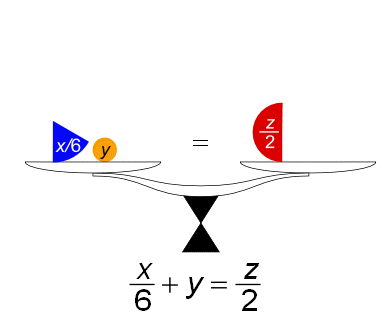
อ่านภาพนี้: สมการเหมือนตาชั่ง: เปลี่ยนรูปสมการโดยรักษาความเท่ากันของทั้งสองด้านจำง่าย: ตัวแปรเปลี่ยนค่าได้ เช่น จำนวนวันเพิ่มจาก 1 เป็น 2 และ 3
Eqn balance animation.gif — Maschen · CC0 / Public domain · GIF ต้นฉบับ
ค่าคงที่ที่กำหนดลักษณะของโมเดล ไม่เปลี่ยนระหว่างการคำนวณ
"cooling rate คุณอาจจะมองเป็น parameter เพราะมันทำงาน 100% ตลอดเวลา"
\[y=\theta x,\quad \theta=2\]
GIF ประกอบแนวคิด • 02 / 155 เล่น GIF
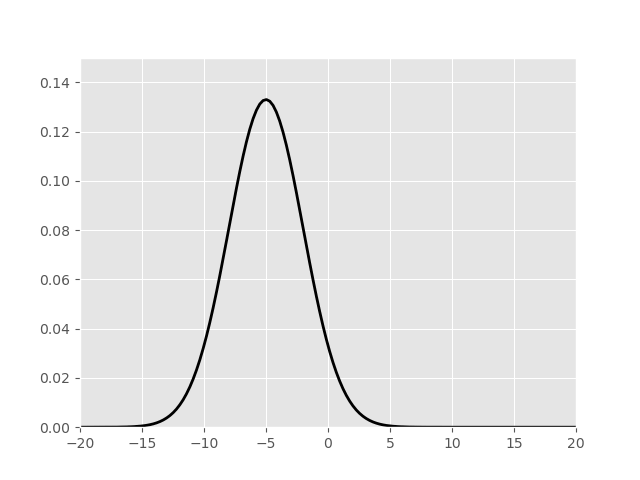
อ่านภาพนี้: เมื่อเปลี่ยนพารามิเตอร์ค่าเฉลี่ย ตำแหน่งของกราฟการกระจายจะเลื่อนจำง่าย: เมื่อพารามิเตอร์คงที่ ตัวแปรยังเปลี่ยนได้
Location parameter normal distribution.gif — Fschwarzentruber · CC BY-SA 4.0 · GIF ต้นฉบับ
ค่าที่มาจากภายนอกขอบเขตระบบ อาจเป็นสิ่งที่ควบคุมได้หรือเป็นสิ่งรบกวน
"เหยียบคันเร่ง = external input เพราะคุณใส่แรงเข้าไป"
\[u(t)=\text{applied power}\]
GIF ประกอบแนวคิด • 03 / 155 เล่น GIF
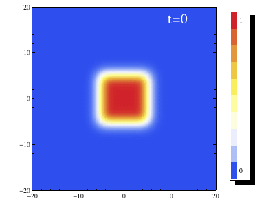
อ่านภาพนี้: ความร้อนในพื้นที่สองมิติกระจายและเปลี่ยนตามเวลา เป็นตัวอย่างของสถานะและสมการเชิงอนุพันธ์จำง่าย: ข้อมูลเข้าจากภายนอกอาจควบคุมได้ เช่น กำลังที่เราใส่ให้ระบบ
Heat2D.gif — Kondensat · CC BY-SA 3.0 · GIF ต้นฉบับ
ค่าที่เปลี่ยนภายในระบบจากกลไกของระบบเอง
"น้ำมันที่ฉีดออกมาเพื่อเข้าหัวฉีด = internal variable มันขึ้นอยู่กับว่าหัวฉีดปรับยังไง"
\[x(t)=T(t)\]
GIF ประกอบแนวคิด • 04 / 155 เล่น GIF
อ่านภาพนี้: ความร้อนในพื้นที่สองมิติกระจายและเปลี่ยนตามเวลา เป็นตัวอย่างของสถานะและสมการเชิงอนุพันธ์จำง่าย: สถานะภายในเปลี่ยนตามเวลาและข้อมูลเข้า
Heat2D.gif — Kondensat · CC BY-SA 3.0 · GIF ต้นฉบับ
ประโยคที่บอกว่าสองสิ่งเท่ากัน (มีเครื่องหมาย =)
\[E=Pt=20\times3=60\,\mathrm{J}\]
GIF ประกอบแนวคิด • 05 / 155 เล่น GIF
อ่านภาพนี้: สมการเหมือนตาชั่ง: เปลี่ยนรูปสมการโดยรักษาความเท่ากันของทั้งสองด้านจำง่าย: กำลัง 20 วัตต์เป็นเวลา 3 วินาที ให้พลังงาน 60 จูล
Eqn balance animation.gif — Maschen · CC0 / Public domain · GIF ต้นฉบับ
ตัวเลขหรือป้ายกำกับที่ใช้แยกตัวแปรหลายตัว
"ผมใช้เวลาครึ่งวันเต็ม ๆ ในการประกาศตัวแปร ก่อนเขียน paper เกือบตาย"
\[x_{ij}\in\{0,1\}\]
GIF ประกอบแนวคิด • 06 / 155 เล่น GIF
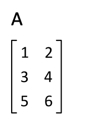
อ่านภาพนี้: สมาชิกเมทริกซ์สลับแถวกับหลักเมื่อทำทรานสโพสจำง่าย: ดัชนีระบุทั้งงานและเครื่องที่งานนั้นถูกส่งไป
Matrix transpose.gif — Lucas Vieira · License · GIF ต้นฉบับ
สมการที่เป็นเส้นตรง ไม่มีกำลังสอง ไม่มีคูณกันของตัวแปร
"ทุกคนชอบ linear แต่คนสร้างโมเดลไม่ชอบ เพราะมันอธิบายอะไรไม่ได้เยอะ"
\[y=2x+1,\quad a_1x_1+a_2x_2=c\]
GIF ประกอบแนวคิด • 07 / 155 เล่น GIF
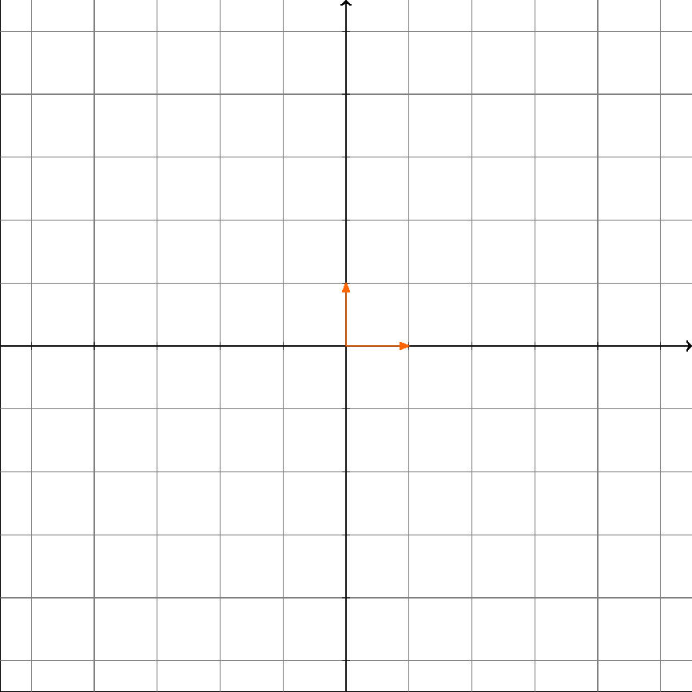
อ่านภาพนี้: การแปลงเชิงเส้นยืดแกนและรักษาแนวเส้นตรงจำง่าย: เพิ่ม x เท่า ๆ กันแล้ว y เพิ่มเท่า ๆ กัน
Stretching-of-the-x-axis.gif — GruenerBogen · CC BY-SA 4.0 · GIF ต้นฉบับ
สมการที่ไม่เป็นเส้นตรง มีกำลังสอง คูณกัน หรือ sin/cos
"ถ้าเป็น pendulum ติดเป็น sin(x) ขึ้นมา นั่น nonlinear"
\[y=x^2,\quad x_1x_2+x_3^2=b\]
GIF ประกอบแนวคิด • 08 / 155 เล่น GIF
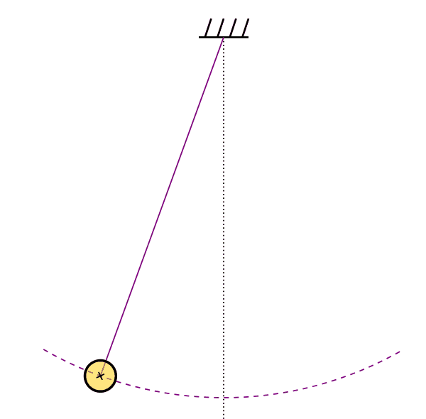
อ่านภาพนี้: ลูกตุ้มแกว่งผ่านตำแหน่งสมดุล ความเร็วและตำแหน่งเปลี่ยนตามเวลาจำง่าย: เมื่อ x เพิ่มเท่ากัน ค่า y เพิ่มไม่เท่ากัน
Pendulum-no-text.gif — Stündle (modification Ideophagous ) · CC BY-SA 4.0 · GIF ต้นฉบับ
หน่วยวัดของปริมาณ เช่น กก. บาท วินาที — ต้องตรงกันถึงจะบวกกันได้
"ขอร้อง อย่าเอารถ 5 คัน บวกกับ Apple 3 ลูก มันบวกไม่ได้"
\[[E]=[P][t]=\mathrm{W\,s}=\mathrm{J}\]
GIF ประกอบแนวคิด • 09 / 155 เล่น GIF
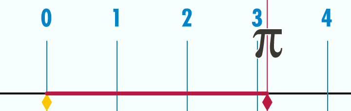
อ่านภาพนี้: คลี่เส้นรอบวงออกเป็นเส้นตรงเพื่อเห็นว่าความยาวเท่ากับพายคูณเส้นผ่านศูนย์กลางจำง่าย: ตรวจหน่วยก่อนคำนวณ เช่น วัตต์คูณวินาทีเป็นจูล
Pi-unrolled-720.gif — John Reid · CC BY-SA 3.0 · GIF ต้นฉบับ
ข้อตกลงพื้นฐานที่ไม่ต้องพิสูจน์ เช่น "จุดมีจริง"
"axiom ของนักคณิตฯ มาจากจินตนาการ แต่ axiom ของนักฟิสิกส์มาจากการตรวจวัดได้"
\[a+0=a\]
GIF ประกอบแนวคิด • 10 / 155 เล่น GIF
อ่านภาพนี้: สมการเหมือนตาชั่ง: เปลี่ยนรูปสมการโดยรักษาความเท่ากันของทั้งสองด้านจำง่าย: สัจพจน์เป็นกติกาพื้นฐานที่ยอมรับในระบบนั้น
Eqn balance animation.gif — Maschen · CC0 / Public domain · GIF ต้นฉบับ
หลัก: สะสม = เข้า − ออก + สร้าง − กิน
"conservation law คือ input ลบ output บวก generation ลบ consumption"
\[\frac{dM}{dt}=q_{\mathrm{in}}-q_{\mathrm{out}}\]
GIF ประกอบแนวคิด • 11 / 155 เล่น GIF
อ่านภาพนี้: ลูกตุ้มชนกันเพื่ออธิบายการถ่ายโอนโมเมนตัมและพลังงานจำง่าย: ปริมาณสะสมเพิ่มตามปริมาณเข้า ลบปริมาณออก
Newtons cradle animation book.gif — DemonDeLuxe (Dominique Toussaint) · CC BY-SA 3.0 · GIF ต้นฉบับ
รากฐานของคณิตศาสตร์ — นิยามเซตและสมาชิก
"สมัย ม.ปลาย เรียน set theory กันมาแล้ว"
\[A=\{1,2\},\ B=\{2,3\},\ A\cap B=\{2\}\]
ภาพประกอบจากเว็บ • 12 / 155
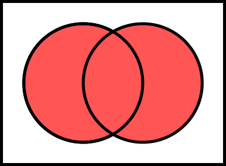
อ่านภาพนี้: แผนภาพเวนน์แสดงเซตและสมาชิกที่อยู่ในเซตต่าง ๆจำง่าย: เซตเก็บสมาชิก และส่วนร่วมคือสมาชิกที่อยู่ทั้งสองเซต
Venn0111.svg — See source for creator credits · License · ภาพต้นฉบับหรือภาพย่อจาก Wikimedia
∫ Calculus 10
อัตราการเปลี่ยนแปลง — ถามว่า "y เปลี่ยนเร็วแค่ไหนเมื่อ x เปลี่ยน"
"จุดข้างบนนี้คือ dx/dt นะครับ คือ diff เทียบ t"
\[\frac{dN}{dt}=80-10t\]
GIF ประกอบแนวคิด • 13 / 155 เล่น GIF
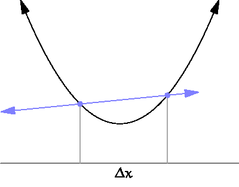
อ่านภาพนี้: เมื่อสองจุดเข้าใกล้กัน เส้นตัดเข้าใกล้เส้นสัมผัส ความชันจึงเข้าใกล้อนุพันธ์จำง่าย: จุดเคลื่อนบนกราฟ พร้อมเส้นสัมผัสที่บอกอัตราการเปลี่ยนแปลง
Tangent animation.gif — Brnbrnz · CC BY-SA 4.0 · GIF ต้นฉบับ
สมการที่มีอนุพันธ์ (\(\frac{d}{dt}\)) อยู่ข้างใน
"ถ้าเป็น dynamic คุณจะเห็นตัว diff หลุดออกมาแน่ ๆ"
\[C\frac{dT}{dt}=P(t)-h(T-T_{\mathrm{amb}})\]
GIF ประกอบแนวคิด • 14 / 155 เล่น GIF
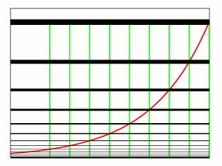
อ่านภาพนี้: กราฟเอ็กซ์โพเนนเชียลเป็นตัวอย่างฟังก์ชันที่เกิดจาก ODE เมื่ออัตราการเปลี่ยนแปลงแปรตามค่าปัจจุบันจำง่าย: ODE บอกอัตราที่สถานะเปลี่ยน แล้วใช้คำนวณสถานะถัดไป
Animation of exponential function.gif — Almacantar · License · GIF ต้นฉบับ
เทคนิคแก้ ODE โดยย้าย y ไปซ้าย, t ไปขวา แล้วอินทิเกรต
"dy/(y−5000) = −0.01 dt"
\[\frac{dy}{dt}=-ky\ \Rightarrow\ \frac{dy}{y}=-k\,dt\ \Rightarrow\ y=Ce^{-kt}\]
GIF ประกอบแนวคิด • 15 / 155 เล่น GIF
อ่านภาพนี้: การเปลี่ยนแปลงของฟังก์ชันเอ็กซ์โพเนนเชียลจำง่าย: แยกส่วนที่มี y และ t แล้วอินทิเกรตทั้งสองข้าง
Animation of exponential function.gif — Almacantar · CC BY-SA 4.0 · GIF ต้นฉบับ
ย้อนกลับของอนุพันธ์ — รวมอัตราการเปลี่ยนแปลงเป็นค่าทั้งหมด
"อินทิเกรตทั้งสองข้าง ได้ ln(y−5000) = −0.01t + c"
\[\int_0^2 x^2\,dx=\frac83\]
GIF ประกอบแนวคิด • 16 / 155 เล่น GIF
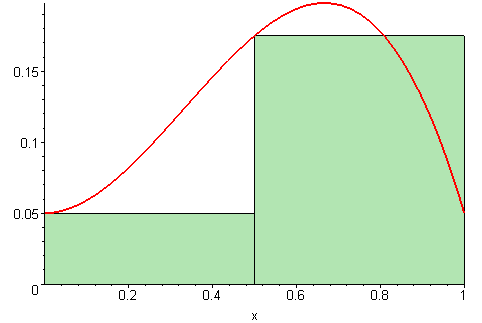
อ่านภาพนี้: เพิ่มจำนวนแท่งและลดความกว้างเพื่อประมาณพื้นที่ใต้กราฟให้ละเอียดขึ้นจำง่าย: แบ่งพื้นที่ใต้กราฟเป็นแท่งเล็กลง ผลรวมเข้าใกล้อินทิกรัล
Riemann sum (leftbox).gif — 09glasgow09 · CC BY-SA 3.0 · GIF ต้นฉบับ
ฟังก์ชันที่เกิดจากการอินทิเกรต 1/x
"∫ dy/(y−5000) = ln(y−5000)"
\[\ln x=\log_e x,\quad \int\frac{dx}{x}=\ln|x|+C\]
GIF ประกอบแนวคิด • 17 / 155 เล่น GIF
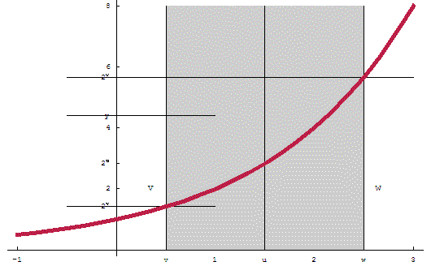
อ่านภาพนี้: ภาพประกอบความสัมพันธ์ของลอการิทึม ดูฐานและค่าที่ระบุในภาพควบคู่กับสูตรด้านบนจำง่าย: ln ย้อนกลับการยกกำลังฐาน e และต้องใส่ค่าสัมบูรณ์เมื่ออินทิเกรต 1/x
Logarithm animation.gif — Jakob.scholbach · CC BY-SA 3.0 · GIF ต้นฉบับ
ฟังก์ชันที่ยก e (≈2.718) ยกกำลัง
"ยก e ทั้งสองข้างเพื่อกำจัด ln"
\[y(t)=5000-4900e^{-0.01t}\]
GIF ประกอบแนวคิด • 18 / 155 เล่น GIF
อ่านภาพนี้: การเปลี่ยนแปลงของฟังก์ชันเอ็กซ์โพเนนเชียลจำง่าย: พจน์เอ็กซ์โพเนนเชียลลดลง ทำให้ปริมาณเข้าใกล้ 5000
Animation of exponential function.gif — Almacantar · CC BY-SA 4.0 · GIF ต้นฉบับ
ค่าเริ่มต้นที่ใช้หาค่าคงที่ c หลังแก้ ODE
"ที่ t=0, y=100 → 100 = 5000 + c → c = −4900"
\[y(0)=100,\quad y(t)=5000-4900e^{-0.01t}\]
GIF ประกอบแนวคิด • 19 / 155 เล่น GIF
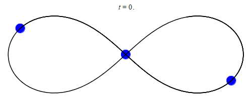
อ่านภาพนี้: วงโคจรรูปเลขแปดเป็นคำตอบพิเศษของระบบสามวัตถุ ไม่ใช่พฤติกรรมของทุกค่าเริ่มต้นจำง่าย: ค่าเริ่มต้นช่วยเลือกคำตอบหนึ่งเส้นจากหลายเส้น
Three body problem figure-8 orbit animation.gif — MaxwellMolecule · CC BY-SA 4.0 · GIF ต้นฉบับ
ค่าที่ระบุที่ขอบเขตของระบบ (เหมือน initial แต่ที่ขอบ)
\[T(0,t)=20,\quad T(L,t)=80\]
GIF ประกอบแนวคิด • 20 / 155 เล่น GIF
อ่านภาพนี้: ความร้อนในพื้นที่สองมิติกระจายและเปลี่ยนตามเวลา เป็นตัวอย่างของสถานะและสมการเชิงอนุพันธ์จำง่าย: เงื่อนไขขอบกำหนดค่าที่ปลายพื้นที่ ไม่ใช่เฉพาะเวลาเริ่มต้น
Heat2D.gif — Kondensat · CC BY-SA 3.0 · GIF ต้นฉบับ
จุดที่ระบบหยุดเปลี่ยนแปลง — อนุพันธ์เท่ากับ 0
"สมการเริ่มจาก equilibrium กับ conservation law"
\[\frac{dy}{dt}=0,\quad y^*=5000\]
GIF ประกอบแนวคิด • 21 / 155 เล่น GIF
อ่านภาพนี้: ความร้อนในพื้นที่สองมิติกระจายและเปลี่ยนตามเวลา เป็นตัวอย่างของสถานะและสมการเชิงอนุพันธ์จำง่าย: สมดุลคือสถานะที่อัตราการเปลี่ยนแปลงเป็นศูนย์
Heat2D.gif — Kondensat · CC BY-SA 3.0 · GIF ต้นฉบับ
ความเร็วที่ค่าเปลี่ยน = ความหมายของ derivative
"dT/dt = อัตราการเปลี่ยนแปลงของอุณหภูมิ"
\[\frac{\Delta y}{\Delta t}=\frac{30-10}{4-0}=5\]
GIF ประกอบแนวคิด • 22 / 155 เล่น GIF
อ่านภาพนี้: เมื่อสองจุดเข้าใกล้กัน เส้นตัดเข้าใกล้เส้นสัมผัส ความชันจึงเข้าใกล้อนุพันธ์จำง่าย: อัตราเฉลี่ยคือผลต่างของค่าหารด้วยผลต่างเวลา
Tangent animation.gif — Brnbrnz · CC BY-SA 4.0 · GIF ต้นฉบับ
ประเภทของ Model 12
Static อธิบายความสัมพันธ์โดยไม่มีพลวัตของสถานะ; Dynamic อธิบายสถานะที่เปลี่ยนตามเวลา
"ถ้าไม่มีเวลาเข้ามา ก็ static ถ้ามีเวลาเมื่อไหร่ก็ dynamic"
\[y=2u\quad\text{vs}\quad \frac{dx}{dt}=-x+u\]
GIF ประกอบแนวคิด • 23 / 155 เล่น GIF
อ่านภาพนี้: ความร้อนในพื้นที่สองมิติกระจายและเปลี่ยนตามเวลา เป็นตัวอย่างของสถานะและสมการเชิงอนุพันธ์จำง่าย: โมเดล static ไม่มีพลวัตของสถานะ ส่วน dynamic อธิบายสถานะที่เปลี่ยนตามเวลา
Heat2D.gif — Kondensat · CC BY-SA 3.0 · GIF ต้นฉบับ
Deterministic = input เดิม output เดิม, Stochastic = มีการสุ่ม
"ถ้ารัน 2 ครั้งได้ผลไม่เหมือนกัน = stochastic"
\[y=3x+2,\quad N\sim\operatorname{Poisson}(\lambda)\]
GIF ประกอบแนวคิด • 24 / 155 เล่น GIF
อ่านภาพนี้: เมื่อเปลี่ยนพารามิเตอร์ค่าเฉลี่ย ตำแหน่งของกราฟการกระจายจะเลื่อนจำง่าย: โมเดลสุ่มอาจให้คำตอบต่างกันแม้ข้อมูลเข้าเหมือนเดิม
Location parameter normal distribution.gif — Fschwarzentruber · CC BY-SA 4.0 · GIF ต้นฉบับ
Continuous รับค่าต่อเนื่องในช่วง; Discrete รับค่าที่แยกกัน เช่น จำนวนชิ้นหรือสถานะใช่/ไม่ใช่
"continuous คำตอบมาเป็นจำนวนจริง discrete เช่น ใช่/ไม่ใช่ เปิด/ไม่เปิด"
\[t\in\mathbb R,\quad n\in\mathbb Z\]
ภาพประกอบจากเว็บ • 25 / 155
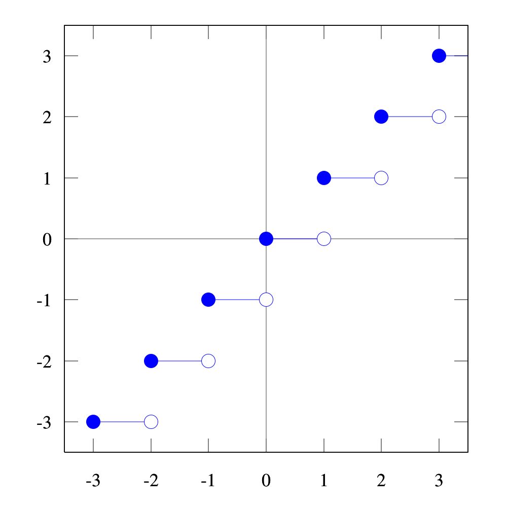
อ่านภาพนี้: กราฟขั้นบันไดของฟังก์ชัน floor ซึ่งเลือกจำนวนเต็มที่ไม่เกินค่าเดิมจำง่าย: ต่อเนื่องรับค่าระหว่างจุดได้ ส่วนไม่ต่อเนื่องเลือกจากค่าที่แยกกัน
Floor function.svg — No machine-readable author provided. Omegatron ( talk · contribs ) assumed (based on copyright claims). · CC BY-SA 3.0 · ภาพต้นฉบับหรือภาพย่อจาก Wikimedia
Mechanistic = ใช้กฎฟิสิกส์, Empirical = ใช้ข้อมูล fit สมการ
"mechanistic คือวิชาฟิสิกส์ empirical คือ linear regression"
\[T\approx2\pi\sqrt{L/g},\quad \hat y=ax+b\]
GIF ประกอบแนวคิด • 26 / 155 เล่น GIF
อ่านภาพนี้: ลูกตุ้มแกว่งผ่านตำแหน่งสมดุล ความเร็วและตำแหน่งเปลี่ยนตามเวลาจำง่าย: กฎลูกตุ้มมาจากกลไก ส่วนเส้นถดถอยเรียนจากข้อมูล
Pendulum-no-text.gif — Stündle (modification Ideophagous ) · CC BY-SA 4.0 · GIF ต้นฉบับ
Analytical = แก้สมการได้สมการ, Computational = ใช้โปรแกรมได้ตัวเลข
"ถ้ายกปากกาขึ้นมาทดเลข = analytical ถ้า import numpy = computational"
"คลาสนี้เน้น Computational แต่ถ้าแก้มือได้ก็ดี"
\[y(t)=e^{-t},\quad y_{n+1}=y_n-\Delta t\,y_n\]
GIF ประกอบแนวคิด • 27 / 155 เล่น GIF
อ่านภาพนี้: ความร้อนในพื้นที่สองมิติกระจายและเปลี่ยนตามเวลา เป็นตัวอย่างของสถานะและสมการเชิงอนุพันธ์จำง่าย: คำตอบแบบสูตรเทียบกับการประมาณทีละช่วงเวลา
Heat2D.gif — Kondensat · CC BY-SA 3.0 · GIF ต้นฉบับ
โมเดลที่ผสม mechanistic + empirical
\[\frac{dT}{dt}=f_{\mathrm{physics}}(T)+r_{\mathrm{data}}(T)\]
GIF ประกอบแนวคิด • 28 / 155 เล่น GIF
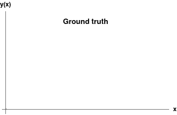
อ่านภาพนี้: หลายโมเดล fit ข้อมูลชุดเดียวกันได้ แต่การทำนายนอกช่วงข้อมูลอาจต่างกันมากจำง่าย: ผสมกฎฟิสิกส์กับส่วนแก้ไขที่เรียนจากข้อมูล
Fitting and extrapolation.gif — Jacopo Bertolotti · CC0 / Public domain · GIF ต้นฉบับ
หาค่าที่ทำให้ผลลัพธ์ดีที่สุด (มากสุดหรือน้อยสุด)
"มีคำว่า 'ดีที่สุด' 'มากสุด' 'น้อยสุด' ขึ้นมาเมื่อไหร่ = optimization"
\[x^*=\operatorname*{arg\,min}_x(x-2)^2\]
GIF ประกอบแนวคิด • 29 / 155 เล่น GIF
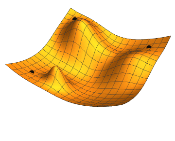
อ่านภาพนี้: การลดค่าฟังก์ชันจากจุดเริ่มต้นต่างกัน อาจหยุดที่ค่าต่ำสุดเฉพาะที่จำง่าย: เลือกค่าตัวแปรที่ทำให้เป้าหมายดีที่สุด
Gradient descent.gif — Jacopo Bertolotti · CC0 / Public domain · GIF ต้นฉบับ
ฟังก์ชันที่เราต้องการ maximize หรือ minimize
"คุณต้อง maximize ฟังก์ชันนึงที่เป็น objective function"
\[\operatorname{Profit}(t)=-5t^2+80t+13000\]
GIF ประกอบแนวคิด • 30 / 155 เล่น GIF
อ่านภาพนี้: การลดค่าฟังก์ชันจากจุดเริ่มต้นต่างกัน อาจหยุดที่ค่าต่ำสุดเฉพาะที่จำง่าย: ฟังก์ชันเป้าหมายใช้ให้คะแนนแต่ละทางเลือก
Gradient descent.gif — Jacopo Bertolotti · CC0 / Public domain · GIF ต้นฉบับ
เงื่อนไขที่ห้ามละเมิด มี 2 แบบ: inequality (≤) และ equality (=)
"มี g₁ ≤ b₁, g₂ ≤ b₂ พวกนี้คือ constraint"
\[4x_1+2x_2\le20\]
GIF ประกอบแนวคิด • 31 / 155 เล่น GIF
อ่านภาพนี้: สมการเหมือนตาชั่ง: เปลี่ยนรูปสมการโดยรักษาความเท่ากันของทั้งสองด้านจำง่าย: ข้อจำกัดแยกทางเลือกที่ทำได้กับทางเลือกที่ทำไม่ได้
Eqn balance animation.gif — Maschen · CC0 / Public domain · GIF ต้นฉบับ
ฟังก์ชันที่อยู่ไม่สูงกว่าเส้นเชื่อมจุดสองจุดบนกราฟ; ถ้าดิฟได้ จุด stationary ภายในโดเมนเป็นค่าต่ำสุดทั่วโดเมน
"นึกถึงกระทะปกตินั่นแหละ ถึงจุดต่ำสุดที่หยดน้ำจะไหลไปรวม"
\[f(x)=x^2,\quad f''(x)=2\ge0\]
ภาพประกอบจากเว็บ • 32 / 155
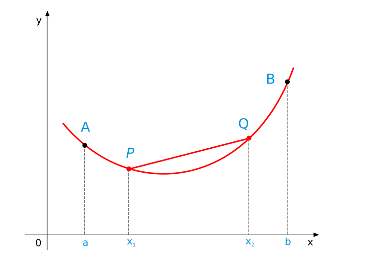
อ่านภาพนี้: กราฟ convex อยู่ไม่สูงกว่าเส้นที่เชื่อมจุดสองจุดบนกราฟจำง่าย: ฟังก์ชัน convex อยู่ใต้เส้นเชื่อมสองจุด และจุด stationary ภายในโดเมนเป็นค่าต่ำสุดทั่วโดเมน
Convex function.svg — NalesnikLD · License · ภาพต้นฉบับหรือภาพย่อจาก Wikimedia
ประมาณค่าระหว่างจุดโดยผ่านจุดข้อมูล; spline ใช้พหุนามเป็นช่วง เช่น cubic spline ดีกรี 3
"cubic spline ใช้สมการกำลัง 3 เชื่อมแต่ละคู่ แล้วให้ smooth"
\[p(x_i)=y_i\]
ภาพประกอบจากเว็บ • 33 / 155
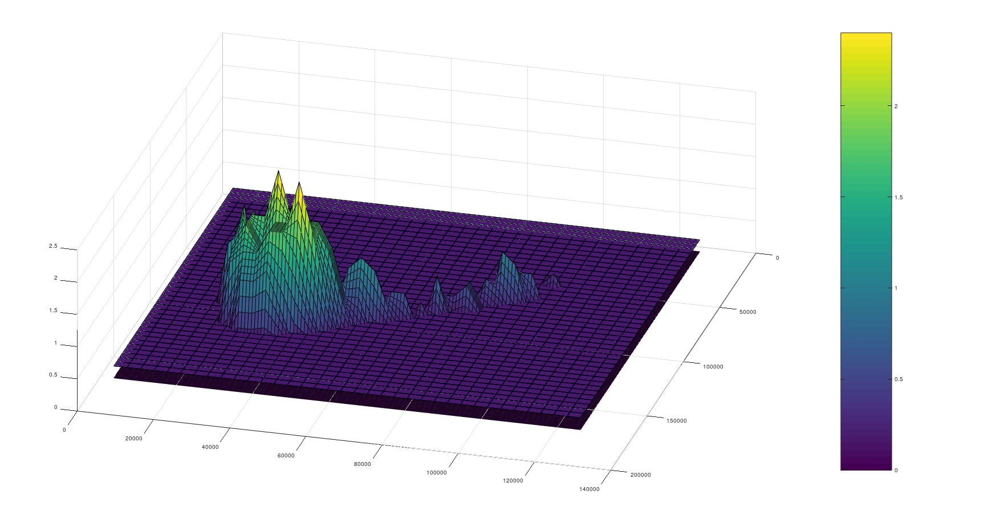
อ่านภาพนี้: ประมาณค่าระหว่างจุดข้อมูลด้วยเส้นตรงจำง่าย: อินเตอร์โพเลชันผ่านจุดข้อมูล ส่วน spline แบ่งเป็นช่วงและอาจมีหลายดีกรี
Interpolation linear.png — Pfei2127 · CC BY-SA 4.0 · ภาพต้นฉบับหรือภาพย่อจาก Wikimedia
ลากเส้นตรงให้ห่างจากจุดข้อมูลน้อยสุด
"ระยะจากจุดไปเส้นต้องน้อยที่สุดโดยรวม"
\[\hat y_i=ax_i+b,\quad \min_{a,b}\sum_i(y_i-\hat y_i)^2\]
GIF ประกอบแนวคิด • 34 / 155 เล่น GIF
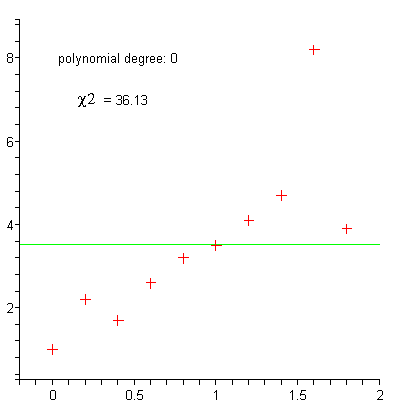
อ่านภาพนี้: ภาพประกอบการ fit เส้นด้วยวิธีกำลังสองน้อยที่สุดจำง่าย: ถดถอยเชิงเส้นปรับเส้นให้ผลรวมความคลาดเคลื่อนกำลังสองต่ำ
Lsf.gif — J.N. at English Wikipedia · CC BY-SA 3.0 · GIF ต้นฉบับ
กระบวนการสร้าง Model 10
สิ่งที่โมเดลต้องการหา ต้องชัดเจนและวัดได้
"คุณต้องบอกว่าโมเดล input อะไร คำนวณอะไร เพื่ออะไร output อะไร"
\[T(10\,\mathrm{min})>85^\circ\mathrm C\ ?\]
GIF ประกอบแนวคิด • 35 / 155 เล่น GIF
อ่านภาพนี้: ความร้อนในพื้นที่สองมิติกระจายและเปลี่ยนตามเวลา เป็นตัวอย่างของสถานะและสมการเชิงอนุพันธ์จำง่าย: กำหนดสิ่งที่จะทำนาย เวลา และเกณฑ์ให้ชัดเจน
Heat2D.gif — Kondensat · CC BY-SA 3.0 · GIF ต้นฉบับ
เส้นแบ่งว่าอะไรอยู่ในโมเดล อะไรอยู่นอก
"โมเดลไม่ใช่ระบบทั้งหมด คุณตัดตัวแปรที่ไม่สำคัญทิ้ง"
\[Q_{\mathrm{in}}-Q_{\mathrm{out}}=\Delta Q_{\mathrm{system}}\]
GIF ประกอบแนวคิด • 36 / 155 เล่น GIF
อ่านภาพนี้: ความร้อนในพื้นที่สองมิติกระจายและเปลี่ยนตามเวลา เป็นตัวอย่างของสถานะและสมการเชิงอนุพันธ์จำง่าย: ขอบเขตระบบกำหนดว่าอะไรอยู่ภายใน และอะไรแลกเปลี่ยนกับภายนอก
Heat2D.gif — Kondensat · CC BY-SA 3.0 · GIF ต้นฉบับ
ข้อตกลงที่ทำให้โมเดลง่ายขึ้น
"สมมุติว่าไม่คิดแรงต้านอากาศ ใช้ s = ut + ½at²"
\[T_{\mathrm{amb}}=25^\circ\mathrm C\]
GIF ประกอบแนวคิด • 37 / 155 เล่น GIF
อ่านภาพนี้: ความร้อนในพื้นที่สองมิติกระจายและเปลี่ยนตามเวลา เป็นตัวอย่างของสถานะและสมการเชิงอนุพันธ์จำง่าย: สมมติฐานต้องระบุชัดและตรวจว่าเหมาะกับสถานการณ์
Heat2D.gif — Kondensat · CC BY-SA 3.0 · GIF ต้นฉบับ
การตัดรายละเอียดออก — Assumption อธิบายเหตุผล
"Simplification ตัดรายละเอียด Assumption บอกว่าทำไมตัดได้"
\[T_1,T_2,T_3\approx T\]
GIF ประกอบแนวคิด • 38 / 155 เล่น GIF
อ่านภาพนี้: หลายโมเดล fit ข้อมูลชุดเดียวกันได้ แต่การทำนายนอกช่วงข้อมูลอาจต่างกันมากจำง่าย: ลดรายละเอียดที่ไม่จำเป็นเพื่อให้คำนวณง่ายขึ้น
Fitting and extrapolation.gif — Jacopo Bertolotti · CC0 / Public domain · GIF ต้นฉบับ
โค้ดตรงกับสมการที่เขียนไหม
"โปรแกรมรันผ่านไม่ได้แปลว่าถูก อาจใช้สมการผิด"
\[y'= -y,\quad y(0)=1,\quad y(t)=e^{-t}\]
GIF ประกอบแนวคิด • 39 / 155 เล่น GIF
อ่านภาพนี้: ภาพประกอบการ fit เส้นด้วยวิธีกำลังสองน้อยที่สุดจำง่าย: verification ตรวจว่าโค้ดแก้สมการตามที่ตั้งไว้ได้ถูกต้อง
Lsf.gif — J.N. at English Wikipedia · CC BY-SA 3.0 · GIF ต้นฉบับ
โมเดลแทนโลกจริงได้พอไหม
"เอาผลไปเทียบกับความจริง ขายได้เท่านี้จริงไหม"
\[\operatorname{RMSE}=\sqrt{\frac1n\sum_i(\hat y_i-y_i)^2}\]
GIF ประกอบแนวคิด • 40 / 155 เล่น GIF
อ่านภาพนี้: หลายโมเดล fit ข้อมูลชุดเดียวกันได้ แต่การทำนายนอกช่วงข้อมูลอาจต่างกันมากจำง่าย: validation ตรวจว่าโมเดลทำนายข้อมูลจริงได้ดีพอสำหรับงาน
Fitting and extrapolation.gif — Jacopo Bertolotti · CC0 / Public domain · GIF ต้นฉบับ
ถ้าพารามิเตอร์เปลี่ยนนิดเดียว ผลลัพธ์เปลี่ยนมากแค่ไหน
"ดูว่าตัวแปรตัวไหนมีผลกับโมเดลมาก"
\[S_\theta\approx\frac{f(\theta+\Delta\theta)-f(\theta)}{\Delta\theta}\]
GIF ประกอบแนวคิด • 41 / 155 เล่น GIF
อ่านภาพนี้: เมื่อเปลี่ยนพารามิเตอร์ค่าเฉลี่ย ตำแหน่งของกราฟการกระจายจะเลื่อนจำง่าย: เปลี่ยนพารามิเตอร์เล็กน้อยแล้วดูผลที่เปลี่ยนตาม
Location parameter normal distribution.gif — Fschwarzentruber · CC BY-SA 4.0 · GIF ต้นฉบับ
ความไม่แน่นอนของข้อมูล พารามิเตอร์ และโครงสร้างโมเดล ซึ่งทำให้คำตอบมีช่วงที่เป็นไปได้
"โควิดเลขที่รายงานมันตรงไม่มีนั่นแหละคือ uncertainty"
\[\hat y\pm1.96\sigma\quad\text{(normal approximation)}\]
GIF ประกอบแนวคิด • 42 / 155 เล่น GIF
อ่านภาพนี้: เมื่อเปลี่ยนพารามิเตอร์ค่าเฉลี่ย ตำแหน่งของกราฟการกระจายจะเลื่อนจำง่าย: ความไม่แน่นอนอาจมาจากข้อมูล พารามิเตอร์ หรือโครงสร้างโมเดล
Location parameter normal distribution.gif — Fschwarzentruber · CC BY-SA 4.0 · GIF ต้นฉบับ
โมเดลจำข้อมูลเก่า แต่ทำนายข้อมูลใหม่ไม่ได้
"LSTM มัน overfit ด้วยการบอกว่าค่าวันนี้ = ค่าเมื่อวาน"
\[E_{\mathrm{train}}\ll E_{\mathrm{test}}\]
GIF ประกอบแนวคิด • 43 / 155 เล่น GIF
อ่านภาพนี้: หลายโมเดล fit ข้อมูลชุดเดียวกันได้ แต่การทำนายนอกช่วงข้อมูลอาจต่างกันมากจำง่าย: การจำ noise ทำให้ข้อมูลเก่าดูดี แต่ข้อมูลใหม่ทำนายแย่
Fitting and extrapolation.gif — Jacopo Bertolotti · CC0 / Public domain · GIF ต้นฉบับ
ข้อมูล test รั่วเข้า train ทำให้ผลดีเกินจริง
"ทำ up/down sampling ก่อน split หรือหลัง split?"
\[D_{\mathrm{train}}\cap D_{\mathrm{test}}=\varnothing\]
GIF ประกอบแนวคิด • 44 / 155 เล่น GIF
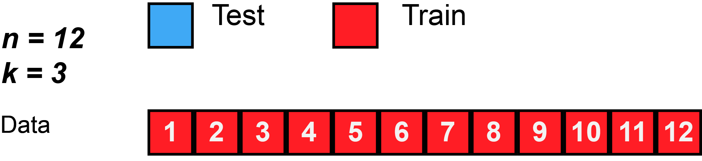
อ่านภาพนี้: สลับส่วนที่ใช้เป็น validation ทีละส่วน และใช้ส่วนที่เหลือเป็น trainingจำง่าย: แยกข้อมูลทดสอบ และ fit ขั้นตอน preprocessing บน training เท่านั้น
KfoldCV.gif — MBanuelos22 · CC BY-SA 4.0 · GIF ต้นฉบับ
Machine Learning 14
สร้างโมเดลจากข้อมูลโดยไม่ต้องเขียนกฎเอง
"backpropagation คิดคนเดียวกับ deep learning ได้ Nobel ฟิสิกส์"
\[\hat y=f_\theta(x),\quad \theta^*=\arg\min_\theta L(\theta)\]
GIF ประกอบแนวคิด • 45 / 155 เล่น GIF
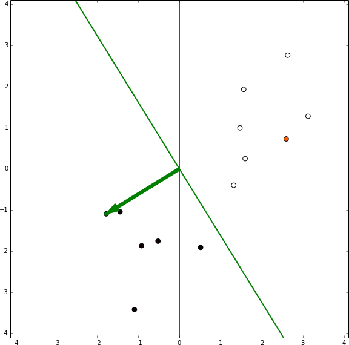
อ่านภาพนี้: ตัวอย่างการฝึก perceptron โดยปรับน้ำหนัก เพื่อเห็นแนวคิดพื้นฐานของการฝึกโครงข่ายจำง่าย: ML เรียนพารามิเตอร์จากตัวอย่างเพื่อนำไปใช้กับข้อมูลใหม่
Perceptron training without bias.gif — Miquel Perelló Nieto · CC BY 4.0 · GIF ต้นฉบับ
Supervised = มีคำตอบให้เรียน, Unsupervised = ไม่มี ให้จัดกลุ่มเอง
"ส่วนมากจะเป็น supervised มี target เช่น ทำนายราคาบ้าน"
\[\{(x_i,y_i)\}\quad\text{vs}\quad\{x_i\}\]
GIF ประกอบแนวคิด • 46 / 155 เล่น GIF
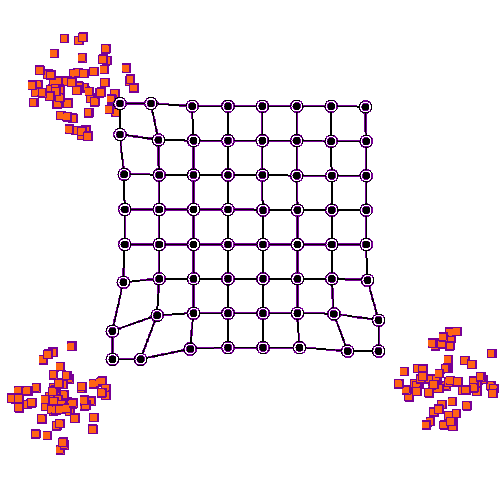
อ่านภาพนี้: ตัวอย่าง self-organizing map ที่เรียนโครงสร้างและจัดกลุ่มจากข้อมูลจำง่าย: มีคำตอบให้เรียนกับไม่มีคำตอบให้เรียน เป็นคนละรูปแบบงาน
TrainSOM.gif — Chompinha · CC BY-SA 4.0 · GIF ต้นฉบับ
อัลกอริทึมที่แบ่งข้อมูลเป็นกิ่ง
"Decision Tree ไป import เอง มันพอสมควร"
\[\hat y=\begin{cases}0&x<5\\1&x\ge5\end{cases}\]
ภาพประกอบจากเว็บ • 47 / 155
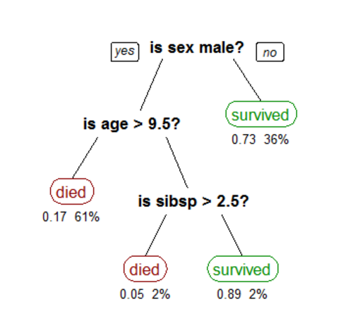
อ่านภาพนี้: ต้นไม้ตัดสินใจแบ่งข้อมูลตามเงื่อนไขที่จุดแตกกิ่ง และให้คำตอบที่ใบจำง่าย: ตัวอย่าง decision tree เลือกคำตอบจากเงื่อนไขแบ่งข้อมูล
CART tree titanic survivors.png — Stephen Milborrow · CC BY-SA 3.0 · ภาพต้นฉบับหรือภาพย่อจาก Wikimedia
โครงข่ายประสาทเทียมหลายชั้น
"หลังจาก fit model แล้ว ใส่ค่าเดิมก็ออกค่าเดิม = deterministic"
\[h=\sigma(W_1x+b_1),\quad \hat y=W_2h+b_2\]
GIF ประกอบแนวคิด • 48 / 155 เล่น GIF
อ่านภาพนี้: ตัวอย่างการฝึก perceptron โดยปรับน้ำหนัก เพื่อเห็นแนวคิดพื้นฐานของการฝึกโครงข่ายจำง่าย: MLP ผสมค่าจากหลายชั้นและใช้ฟังก์ชันไม่เชิงเส้น
Perceptron training without bias.gif — Miquel Perelló Nieto · CC BY 4.0 · GIF ต้นฉบับ
โมเดลสำหรับข้อมูลตามเวลา
"ปัจจุบันใช้ Attention หมด LSTM GRU สูญพันธุ์ไปนานแล้ว"
\[h_t=f(h_{t-1},x_t),\quad \operatorname{Attention}(Q,K,V)=\operatorname{softmax}(QK^T/\sqrt{d_k})V\]
GIF ประกอบแนวคิด • 49 / 155 เล่น GIF
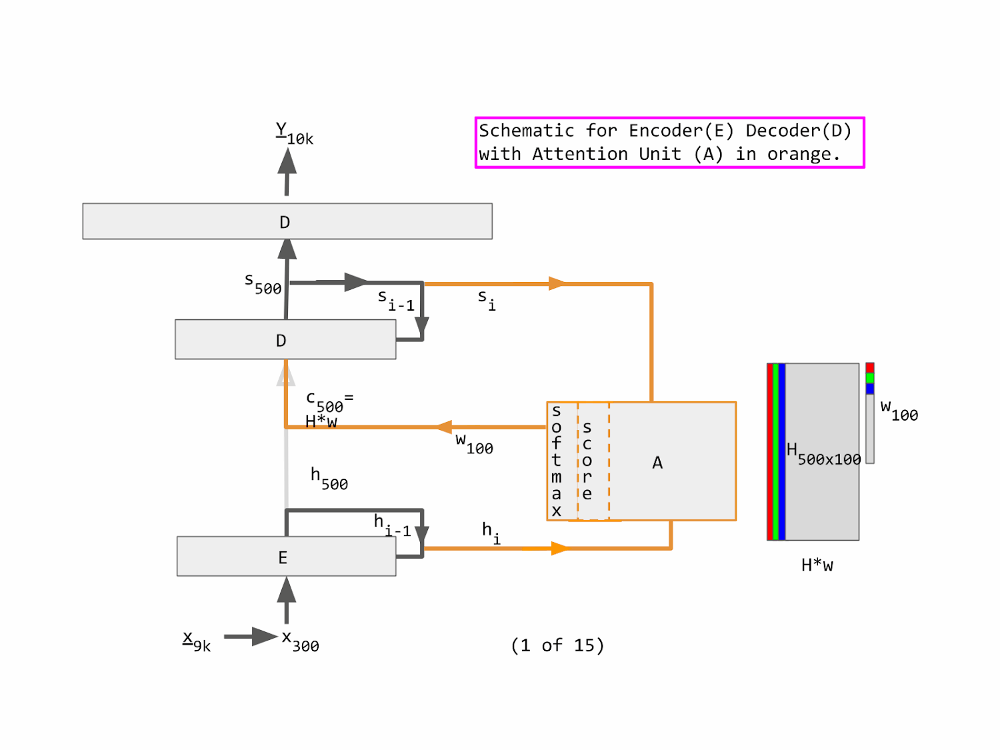
อ่านภาพนี้: ภาพกลไก attention แสดงการให้น้ำหนักข้อมูลที่เกี่ยวข้องจำง่าย: LSTM/GRU เก็บสถานะตามลำดับ ส่วน attention ให้น้ำหนักข้อมูลที่เกี่ยวข้อง
Attention-animated.gif — Numiri · CC BY-SA 4.0 · GIF ต้นฉบับ
โมเดลเชิงเส้นที่ขยายไปรองรับ output หลายแบบ
"GLM ใช้ออกแบบ output layer sigmoid, softmax มาจาก Bernoulli"
\[g(\mathbb E[Y\mid x])=\beta_0+\beta^Tx\]
ภาพประกอบจากเว็บ • 50 / 155
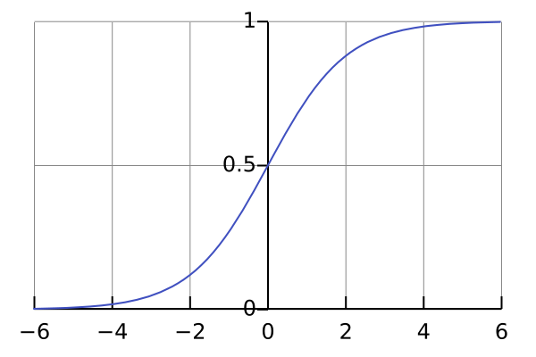
อ่านภาพนี้: กราฟ sigmoid เพิ่มจากใกล้ 0 ไปใกล้ 1 ผ่านค่ากลาง 0.5จำง่าย: GLM เชื่อมค่าเฉลี่ยของผลลัพธ์กับตัวทำนายเชิงเส้นผ่าน link function
Logistic-curve.svg — Qef ( talk ) · License · ภาพต้นฉบับหรือภาพย่อจาก Wikimedia
ฟังก์ชันที่บีบ output ให้อยู่ในช่วง 0-1 สำหรับ binary classification
"ทำไมใช้ sigmoid? เพราะมาจาก Bernoulli distribution"
\[\sigma(z)=\frac{1}{1+e^{-z}}\]
ภาพประกอบจากเว็บ • 51 / 155
อ่านภาพนี้: กราฟ sigmoid เพิ่มจากใกล้ 0 ไปใกล้ 1 ผ่านค่ากลาง 0.5จำง่าย: sigmoid แปลงค่าจริงเป็นช่วง 0 ถึง 1
Logistic-curve.svg — Qef ( talk ) · License · ภาพต้นฉบับหรือภาพย่อจาก Wikimedia
ฟังก์ชันที่แปลง score เป็น probability สำหรับ multi-class
"ทำไมใช้ e^x ไม่ใช้ x? ที่เรียนปกติไม่บอก"
\[p_i=\frac{e^{z_i}}{\sum_j e^{z_j}},\quad \sum_i p_i=1\]
ภาพประกอบจากเว็บ • 52 / 155
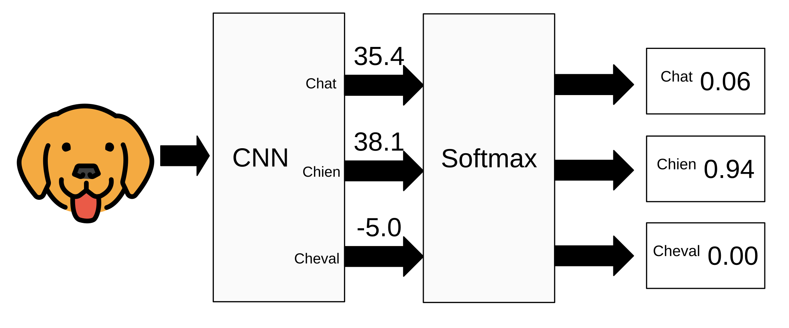
อ่านภาพนี้: ภาพแสดงการเปลี่ยนคะแนนเป็นความน่าจะเป็นของหลายคลาสจำง่าย: softmax ทำให้คะแนนหลายคลาสกลายเป็นความน่าจะเป็นที่รวมกันได้ 1
Softmax.svg — Fschwarzentruber · CC BY-SA 4.0 · ภาพต้นฉบับหรือภาพย่อจาก Wikimedia
อัลกอริทึมที่สอนโครงข่ายประสาท
"คนคิด backprop ได้ Nobel ฟิสิกส์ ปี 2 ที่แล้ว"
\[\theta\leftarrow\theta-\eta\nabla_\theta L\]
GIF ประกอบแนวคิด • 53 / 155 เล่น GIF
อ่านภาพนี้: การลดค่าฟังก์ชันจากจุดเริ่มต้นต่างกัน อาจหยุดที่ค่าต่ำสุดเฉพาะที่จำง่าย: backpropagation ใช้ chain rule หา gradient แล้ว optimizer ปรับน้ำหนัก
Gradient descent.gif — Jacopo Bertolotti · CC0 / Public domain · GIF ต้นฉบับ
ลดจำนวน dimension ของข้อมูล
"จะทำ PCA ก่อนหรือ upsampling ก่อน?"
\[z=X_{\mathrm{centered}}v_1\]
GIF ประกอบแนวคิด • 54 / 155 เล่น GIF
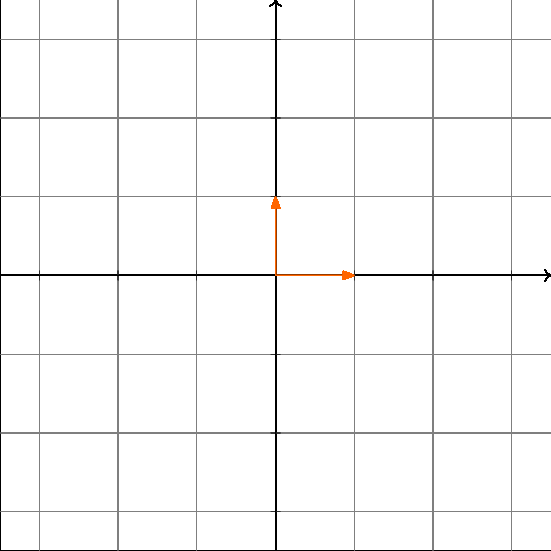
อ่านภาพนี้: การฉายเวกเตอร์ลงบนแกน ตัวอย่างพื้นฐานที่ใช้ทำความเข้าใจการลดมิติจำง่าย: PCA เลือกแกนที่มีความแปรปรวนสูงแล้วฉายข้อมูลลงแกนนั้น
Projection-on-diagonal.gif — GruenerBogen · CC BY-SA 4.0 · GIF ต้นฉบับ
แบ่งข้อมูลเป็น k ส่วน ทดสอบ k รอบเพื่อวัดประสิทธิภาพ
"จะเอา upsampling กับ downsampling ไปใส่ส่วนไหนใน k-fold?"
\[\bar E=\frac1K\sum_{k=1}^K E_k\]
GIF ประกอบแนวคิด • 55 / 155 เล่น GIF
อ่านภาพนี้: สลับส่วนที่ใช้เป็น validation ทีละส่วน และใช้ส่วนที่เหลือเป็น trainingจำง่าย: แต่ละส่วนได้เป็นชุด validation หนึ่งรอบ และส่วนที่เหลือใช้ train
KfoldCV.gif — MBanuelos22 · CC BY-SA 4.0 · GIF ต้นฉบับ
ปรับสัดส่วนข้อมูลเมื่อ class ไม่สมดุล
"data imbalance แล้วจะ up หรือ down sampling ก่อน?"
\[n_{\mathrm{major}}=8,\quad n_{\mathrm{minor}}=2\]
GIF ประกอบแนวคิด • 56 / 155 เล่น GIF
อ่านภาพนี้: สลับส่วนที่ใช้เป็น validation ทีละส่วน และใช้ส่วนที่เหลือเป็น trainingจำง่าย: ปรับสมดุลเฉพาะชุด training เพื่อไม่ให้ผลประเมินรั่ว
KfoldCV.gif — MBanuelos22 · CC BY-SA 4.0 · GIF ต้นฉบับ
วัดความแม่นยำและความครอบคลุม
"F1 ใช้ geometric mean ไม่ใช่ arithmetic mean เพราะไม่มีหน่วย"
\[P=\frac{TP}{TP+FP},\quad R=\frac{TP}{TP+FN},\quad F_1=\frac{2PR}{P+R}\]
ภาพประกอบจากเว็บ • 57 / 155
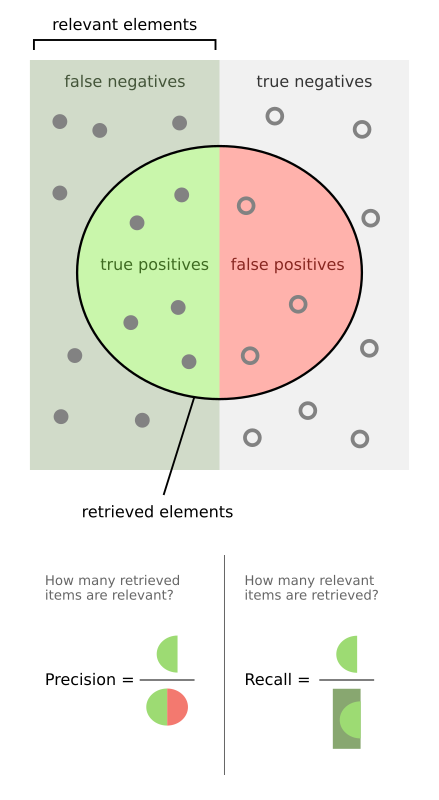
อ่านภาพนี้: แผนภาพเปรียบเทียบผลที่ทำนายว่าใช่กับข้อมูลที่เป็นจริง เพื่อเข้าใจ precision และ recallจำง่าย: precision ดูความถูกต้องในที่ทำนายว่าใช่ ส่วน recall ดูที่เจอจากของจริงทั้งหมด
Precisionrecall.svg — Walber · CC BY-SA 4.0 · ภาพต้นฉบับหรือภาพย่อจาก Wikimedia
รูปแบบการกระจายตัวของข้อมูลสุ่ม
"ส่วนมากใช้ Normal, Uniform, Poisson"
\[X\sim\mathcal N(0,1)\]
GIF ประกอบแนวคิด • 58 / 155 เล่น GIF
อ่านภาพนี้: เมื่อเปลี่ยนพารามิเตอร์ค่าเฉลี่ย ตำแหน่งของกราฟการกระจายจะเลื่อนจำง่าย: การกระจายอธิบายโอกาสของค่าต่าง ๆ ไม่ใช่ค่าครั้งเดียว
Location parameter normal distribution.gif — Fschwarzentruber · CC BY-SA 4.0 · GIF ต้นฉบับ
โมเดลตัวอย่าง 8
อุณหภูมิ CPU เปลี่ยนตามสมดุลระหว่างกำลังความร้อนเข้าและการระบายความร้อน
"เครื่องจักรสร้างอุณหภูมิขึ้นมา ลบกับที่ระบายออก"
\[C\frac{dT}{dt}=P-h(T-T_{\mathrm{amb}})\]
GIF ประกอบแนวคิด • 59 / 155 เล่น GIF
อ่านภาพนี้: ความร้อนในพื้นที่สองมิติกระจายและเปลี่ยนตามเวลา เป็นตัวอย่างของสถานะและสมการเชิงอนุพันธ์จำง่าย: ความร้อนเข้าและความร้อนออกกำหนดการเปลี่ยนอุณหภูมิ CPU
Heat2D.gif — Kondensat · CC BY-SA 3.0 · GIF ต้นฉบับ
แบ่งคนเป็น Susceptible, Infected, Recovered
"S ติดเชื้อกลายเป็น I, I หายกลายเป็น R"
\[\dot S=-\beta SI/N,\quad \dot I=\beta SI/N-\gamma I,\quad \dot R=\gamma I\]
GIF ประกอบแนวคิด • 60 / 155 เล่น GIF
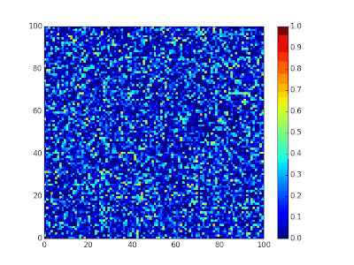
อ่านภาพนี้: การจำลองการแพร่เชื้อแบบ SIR บนตาราง แต่ละจุดแทนสถานะคน; เป็นตัวอย่างเชิงพื้นที่จำง่าย: แบบจำลอง SIR แสดงการเปลี่ยนจำนวนคนสามกลุ่มตามสมการ
SIR model simulated using python.gif — Beta212 · CC BY-SA 3.0 · GIF ต้นฉบับ
โมเดลประชากรผู้ล่าและเหยื่อที่ผันตามกัน
"เหยื่อเยอะ → ผู้ล่าเยอะ → เหยื่อลด → ผู้ล่าลด → วนซ้ำ"
\[\dot x=\alpha x-\beta xy,\quad\dot y=\delta xy-\gamma y\]
ภาพประกอบจากเว็บ • 61 / 155
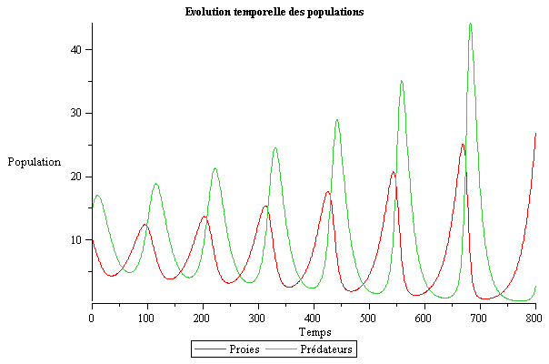
อ่านภาพนี้: ประชากรเหยื่อและผู้ล่าเปลี่ยนตามปฏิสัมพันธ์ของทั้งสองกลุ่มจำง่าย: ประชากรเหยื่อกับผู้ล่าขึ้นลงโดยมีช่วงเวลาตามกัน
Lotka Volterra Dynamique.gif — Bloor · CC BY-SA 3.0 · ภาพต้นฉบับหรือภาพย่อจาก Wikimedia
คาบลูกตุ้มอย่างง่าย ขึ้นกับความยาวและแรงโน้มถ่วง; สูตรด้านล่างใช้ประมาณเมื่อมุมแกว่งเล็ก
"มวลไม่เกี่ยว ถ้าเพิ่มน้ำหนัก 80,000 ตัน คาบก็เท่าเดิม"
\[T\approx2\pi\sqrt{L/g}\quad\text{(small angle)}\]
GIF ประกอบแนวคิด • 62 / 155 เล่น GIF
อ่านภาพนี้: ลูกตุ้มแกว่งผ่านตำแหน่งสมดุล ความเร็วและตำแหน่งเปลี่ยนตามเวลาจำง่าย: ภาพลูกตุ้มแสดงการแกว่ง; สูตรคาบนี้เป็นค่าประมาณเมื่อมุมแกว่งเล็ก
Pendulum-no-text.gif — Stündle (modification Ideophagous ) · CC BY-SA 4.0 · GIF ต้นฉบับ
หาปริมาณสารในถังเมื่อเวลา t
"dy/dt = 50 − 0.01y"
\[\frac{dM}{dt}=q_{\mathrm{in}}c_{\mathrm{in}}-q_{\mathrm{out}}\frac{M}{V}\]
GIF ประกอบแนวคิด • 63 / 155 เล่น GIF
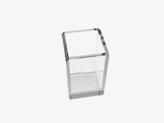
อ่านภาพนี้: ภาพการเคลื่อนที่ของน้ำ แสดงตัวอย่างพฤติกรรมของของไหลจำง่าย: สารที่ออกมีความเข้มข้นเท่ากับในถัง ภายใต้สมมติฐานผสมทั่วถึง
Waterincup.gif — Nextil at English Wikipedia · License · GIF ต้นฉบับ
หาวันที่กำไรสูงสุด = วันที่ 8
"dN/dt = 80 − 10t = 0 → t = 8"
\[\Pi(t)=-5t^2+80t+13000,\quad t^*=8\]
GIF ประกอบแนวคิด • 64 / 155 เล่น GIF
อ่านภาพนี้: การลดค่าฟังก์ชันจากจุดเริ่มต้นต่างกัน อาจหยุดที่ค่าต่ำสุดเฉพาะที่จำง่าย: กำไรเป็นพาราโบลาคว่ำ จึงสูงสุดที่วันที่ 8 ภายใต้โมเดลนี้
Gradient descent.gif — Jacopo Bertolotti · CC0 / Public domain · GIF ต้นฉบับ
สมการพื้นฐานของพลศาสตร์ของไหล; บางกรณีมีคำตอบแบบสูตร ส่วนกรณีซับซ้อนมักใช้การคำนวณ
"แก้ไม่ได้นะ ต้องใช้ computational"
\[\rho(\partial_t u+u\cdot\nabla u)=-\nabla p+\mu\nabla^2u+f\]
GIF ประกอบแนวคิด • 65 / 155 เล่น GIF
อ่านภาพนี้: ภาพการเคลื่อนที่ของน้ำ แสดงตัวอย่างพฤติกรรมของของไหลจำง่าย: สมการของไหลมีคำตอบแบบสูตรในกรณีพิเศษ แต่กรณีซับซ้อนมักใช้การคำนวณ
Waterincup.gif — Nextil at English Wikipedia · License · GIF ต้นฉบับ
วัตถุ 3 ก้อนดึงดูดกัน; ไม่มีสูตรคำตอบทั่วไปที่ใช้ง่าย แต่มีคำตอบพิเศษบางกรณี
"ไม่ใช่การคำนวณเกี่ยวกับร่างกาย มันเรื่องฟิสิกส์"
\[\ddot r_i=G\sum_{j\ne i}m_j\frac{r_j-r_i}{\|r_j-r_i\|^3}\]
GIF ประกอบแนวคิด • 66 / 155 เล่น GIF
อ่านภาพนี้: วงโคจรรูปเลขแปดเป็นคำตอบพิเศษของระบบสามวัตถุ ไม่ใช่พฤติกรรมของทุกค่าเริ่มต้นจำง่าย: ระบบสามวัตถุทั่วไปซับซ้อนและมักคำนวณเชิงตัวเลข ภาพเป็นเพียงตัวอย่างการเคลื่อนที่
Three body problem figure-8 orbit animation.gif — MaxwellMolecule · CC BY-SA 4.0 · GIF ต้นฉบับ
สัญลักษณ์ทางคณิตศาสตร์ 28
ค่าทางซ้ายและทางขวาเท่ากัน
\[E=Pt=60\,\mathrm J\]
GIF ประกอบแนวคิด • 67 / 155 เล่น GIF
อ่านภาพนี้: สมการเหมือนตาชั่ง: เปลี่ยนรูปสมการโดยรักษาความเท่ากันของทั้งสองด้านจำง่าย: เครื่องหมายเท่ากับบอกว่าค่าทั้งสองด้านเท่ากัน
Eqn balance animation.gif — Maschen · CC0 / Public domain · GIF ต้นฉบับ
ค่าทางซ้ายและทางขวาไม่เท่ากัน
\[3\ne5\]
GIF ประกอบแนวคิด • 68 / 155 เล่น GIF
อ่านภาพนี้: สมการเหมือนตาชั่ง: เปลี่ยนรูปสมการโดยรักษาความเท่ากันของทั้งสองด้านจำง่าย: ชื่อ P กับ p ต่างกัน แต่ค่าจะเท่ากันหรือไม่ต้องดูข้อมูล ไม่ใช่ดูชื่ออย่างเดียว
Eqn balance animation.gif — Maschen · CC0 / Public domain · GIF ต้นฉบับ
การดำเนินการพื้นฐาน
"ขอร้อง อย่าเอารถ 5 คัน บวกกับ Apple 3 ลูก มันบวกไม่ได้"
\[3+2=5,\quad3-2=1,\quad3\times2=6,\quad6\div2=3\]
GIF ประกอบแนวคิด • 69 / 155 เล่น GIF
อ่านภาพนี้: สมการเหมือนตาชั่ง: เปลี่ยนรูปสมการโดยรักษาความเท่ากันของทั้งสองด้านจำง่าย: การบวก ลบ คูณ หารเป็นการดำเนินการคนละแบบ
Eqn balance animation.gif — Maschen · CC0 / Public domain · GIF ต้นฉบับ
เปรียบเทียบค่า — ใช้เขียน constraint
"g₁(x) ≤ b₁ พวกนี้คือ constraint"
\[4x_1+2x_2\le20,\quad 3<5,\quad5\ge5\]
ภาพประกอบจากเว็บ • 70 / 155
อ่านภาพนี้: กราฟขั้นบันไดของฟังก์ชัน floor ซึ่งเลือกจำนวนเต็มที่ไม่เกินค่าเดิมจำง่าย: เครื่องหมายที่มีขีดเท่ากับยอมให้ค่าเท่ากับขอบได้
Floor function.svg — No machine-readable author provided. Omegatron ( talk · contribs ) assumed (based on copyright claims). · CC BY-SA 3.0 · ภาพต้นฉบับหรือภาพย่อจาก Wikimedia
คูณตัวเดียวกัน n ครั้ง — ตัวยกเล็กข้างบน
"ติดเป็น sin(x) ขึ้นมา นั่น nonlinear"
\[2^3=2\times2\times2=8\]
GIF ประกอบแนวคิด • 71 / 155 เล่น GIF
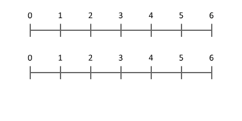
อ่านภาพนี้: การคูณมองเป็นการขยายขนาดของจำนวนได้จำง่าย: เลขชี้กำลังบอกจำนวนครั้งที่คูณฐานเดิม สำหรับกำลังจำนวนเต็มบวก
Multiplication as scaling integers.gif — Lucas Vieira · License · GIF ต้นฉบับ
เลขลบบนตัวยก หมายถึง หาร แทน
\[x^{-n}=\frac1{x^n},\quad2^{-3}=\frac18\]
GIF ประกอบแนวคิด • 72 / 155 เล่น GIF
อ่านภาพนี้: การเปลี่ยนแปลงของฟังก์ชันเอ็กซ์โพเนนเชียลจำง่าย: กำลังลบหมายถึงส่วนกลับ เมื่อฐานไม่เป็นศูนย์
Animation of exponential function.gif — Almacantar · CC BY-SA 4.0 · GIF ต้นฉบับ
ตัวที่ยกกำลังสองแล้วได้ x — ย้อนกลับของ ²
\[\sqrt9=3,\quad T\approx2\pi\sqrt{L/g}\]
ภาพประกอบจากเว็บ • 73 / 155
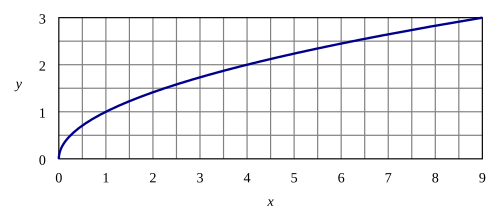
อ่านภาพนี้: การสร้างเชิงเรขาคณิตเพื่ออธิบายรากที่สองจำง่าย: รากที่สองหลักเป็นค่าที่ไม่ติดลบ และยกกำลังสองแล้วได้ค่าข้างใน
Square-root.svg — Peter John Acklam · License · ภาพต้นฉบับหรือภาพย่อจาก Wikimedia
ป้ายชื่อ เพื่อแยกตัวแปรหลายตัว — ไม่ใช่ยกกำลัง
"ผมใช้เวลาครึ่งวันประกาศตัวแปร ก่อนเขียน paper เกือบตาย"
\[x_1,x_2,\quad T_{\mathrm{amb}}\]
GIF ประกอบแนวคิด • 74 / 155 เล่น GIF
อ่านภาพนี้: สมาชิกเมทริกซ์สลับแถวกับหลักเมื่อทำทรานสโพสจำง่าย: ตัวห้อยเป็นป้ายระบุ ไม่ได้หมายถึงยกกำลัง
Matrix transpose.gif — Lucas Vieira · License · GIF ต้นฉบับ
บวกรวมหลาย ๆ ค่าเข้าด้วยกัน
\[\sum_{i=1}^3 x_i=x_1+x_2+x_3=2+3+4=9\]
ภาพประกอบจากเว็บ • 75 / 155
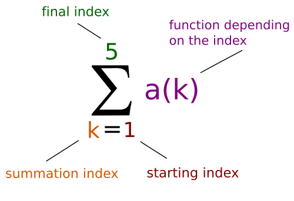
อ่านภาพนี้: การขยายรูปสัญลักษณ์ผลรวมให้เห็นพจน์ที่นำมาบวกกันจำง่าย: ซิกมาไล่ดัชนีแล้วบวกรวมทีละค่า
Sigma summation notation.svg — Lina Maria Garcia and Sascha Lill took the figures from Wikibooks and edited the captions · CC BY-SA 4.0 · ภาพต้นฉบับหรือภาพย่อจาก Wikimedia
คูณรวมหลาย ๆ ค่า — เหมือน Σ แต่เปลี่ยนบวกเป็นคูณ
\[\prod_{i=1}^3 x_i=x_1x_2x_3=2\times3\times4=24\]
GIF ประกอบแนวคิด • 76 / 155 เล่น GIF
อ่านภาพนี้: การคูณมองเป็นการขยายขนาดของจำนวนได้จำง่าย: เครื่องหมาย product ไล่ดัชนีแล้วคูณรวม
Multiplication as scaling integers.gif — Lucas Vieira · License · GIF ต้นฉบับ
อัตราการเปลี่ยนแปลง — แบบต่าง ๆ ที่อาจารย์เขียน
"จุดข้างบนนี้คือ dx/dt นะครับ คือ diff เทียบ t"
\[\dot x=\frac{dx}{dt},\quad f'(x)=\frac{df}{dx}\]
GIF ประกอบแนวคิด • 77 / 155 เล่น GIF
อ่านภาพนี้: เมื่อสองจุดเข้าใกล้กัน เส้นตัดเข้าใกล้เส้นสัมผัส ความชันจึงเข้าใกล้อนุพันธ์จำง่าย: ดอทมักใช้อนุพันธ์เทียบเวลา ส่วนไพรม์ใช้อนุพันธ์เทียบอาร์กิวเมนต์
Tangent animation.gif — Brnbrnz · CC BY-SA 4.0 · GIF ต้นฉบับ
ย้อนกลับของอนุพันธ์ — รวมพื้นที่ใต้กราฟ
\[\int(80-10t)\,dt=80t-5t^2+C\]
GIF ประกอบแนวคิด • 78 / 155 เล่น GIF
อ่านภาพนี้: เพิ่มจำนวนแท่งและลดความกว้างเพื่อประมาณพื้นที่ใต้กราฟให้ละเอียดขึ้นจำง่าย: อินทิกรัลสะสมอัตราการเปลี่ยนแปลง; แบบไม่กำหนดเขตต้องมีค่าคงที่ C
Riemann sum (leftbox).gif — 09glasgow09 · CC BY-SA 3.0 · GIF ต้นฉบับ
log ฐาน e — อินทิเกรต 1/x แล้วได้ ln
"\(\int\frac{dy}{y-5000}=\ln|y-5000|+C\)"
\[\int\frac{dy}{y-5000}=\ln|y-5000|+C\]
GIF ประกอบแนวคิด • 79 / 155 เล่น GIF
อ่านภาพนี้: ภาพประกอบความสัมพันธ์ของลอการิทึม ดูฐานและค่าที่ระบุในภาพควบคู่กับสูตรด้านบนจำง่าย: ค่าสัมบูรณ์ทำให้สูตรใช้ได้ทั้งด้านบวกและด้านลบของ y−5000
Logarithm animation.gif — Jakob.scholbach · CC BY-SA 3.0 · GIF ต้นฉบับ
ค่าคงที่ ≈ 2.71828... — ใช้ในการเติบโต/สลาย
"ยก e ทั้งสองข้างเพื่อกำจัด ln"
\[e\approx2.71828,\quad y(t)=5000-4900e^{-0.01t}\]
GIF ประกอบแนวคิด • 80 / 155 เล่น GIF
อ่านภาพนี้: การเปลี่ยนแปลงของฟังก์ชันเอ็กซ์โพเนนเชียลจำง่าย: ฐาน e ใช้อธิบายการเติบโตและการลดลงแบบต่อเนื่อง
Animation of exponential function.gif — Almacantar · CC BY-SA 4.0 · GIF ต้นฉบับ
กฎที่รับ input แล้วคำนวณเป็น output — วงเล็บไม่ใช่คูณ
"f กิน input เข้ามา ปึ๊บ y ก็คือ observable output"
\[f(x)=2x+1,\quad P(t)=65-t\]
GIF ประกอบแนวคิด • 81 / 155 เล่น GIF
อ่านภาพนี้: การเปลี่ยนแปลงของฟังก์ชันเอ็กซ์โพเนนเชียลจำง่าย: วงเล็บของฟังก์ชันระบุข้อมูลเข้า ไม่ใช่เครื่องหมายคูณ
Animation of exponential function.gif — Almacantar · CC BY-SA 4.0 · GIF ต้นฉบับ
บอกว่าค่านี้อยู่ในเซต — ใช้เขียนโดเมน
\[2\in\{1,2,3\},\quad4\notin\{1,2,3\}\]
ภาพประกอบจากเว็บ • 82 / 155
อ่านภาพนี้: แผนภาพเวนน์แสดงเซตและสมาชิกที่อยู่ในเซตต่าง ๆจำง่าย: เครื่องหมายสมาชิกใช้ตรวจว่าค่าอยู่ในเซตหรือไม่
Venn0111.svg — See source for creator credits · License · ภาพต้นฉบับหรือภาพย่อจาก Wikimedia
เซตของตัวเลขที่ใช้ในโดเมน
\[\mathbb N\subset\mathbb Z\subset\mathbb R\]
ภาพประกอบจากเว็บ • 83 / 155
อ่านภาพนี้: ความสัมพันธ์ของเซตจำนวนที่ซ้อนกันจำง่าย: จำนวนนับอยู่ในจำนวนเต็ม และจำนวนเต็มอยู่ในจำนวนจริง; บางตำราให้จำนวนนับรวมศูนย์
NumberSetinC.svg — HB · CC BY-SA 4.0 · ภาพต้นฉบับหรือภาพย่อจาก Wikimedia
ค่าที่ใหญ่ไม่มีที่สิ้นสุด — ใช้บอกขอบเขตเช่น equilibrium
\[\lim_{t\to\infty}e^{-0.01t}=0,\quad\lim_{t\to\infty}y(t)=5000\]
GIF ประกอบแนวคิด • 84 / 155 เล่น GIF
อ่านภาพนี้: การเปลี่ยนแปลงของฟังก์ชันเอ็กซ์โพเนนเชียลจำง่าย: อนันต์ไม่ใช่เวลาที่ไปถึงได้ แต่บอกพฤติกรรมเมื่อเวลาเพิ่มไม่สิ้นสุด
Animation of exponential function.gif — Almacantar · CC BY-SA 4.0 · GIF ต้นฉบับ
จำนวนเต็มที่มากที่สุดซึ่งไม่เกินค่าเดิม (จำนวนลบต้องปัดไปทางลบ)
\[\lfloor3.7\rfloor=3,\quad\lfloor-2.3\rfloor=-3\]
ภาพประกอบจากเว็บ • 85 / 155
อ่านภาพนี้: กราฟขั้นบันไดของฟังก์ชัน floor ซึ่งเลือกจำนวนเต็มที่ไม่เกินค่าเดิมจำง่าย: floor เลือกจำนวนเต็มที่มากที่สุดซึ่งไม่เกินค่าเดิม ไม่ใช่ตัดทศนิยมเสมอ
Floor function.svg — No machine-readable author provided. Omegatron ( talk · contribs ) assumed (based on copyright claims). · CC BY-SA 3.0 · ภาพต้นฉบับหรือภาพย่อจาก Wikimedia
ทำให้ผลลัพธ์ไม่ติดลบ
\[|-5|=5,\quad|3|=3\]
ภาพประกอบจากเว็บ • 86 / 155
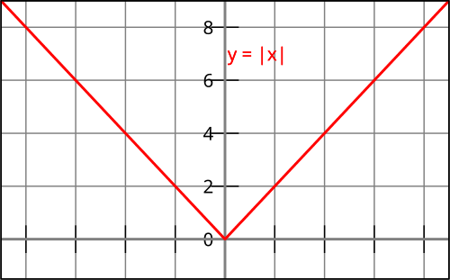
อ่านภาพนี้: ค่าสัมบูรณ์มองเป็นระยะห่างจากศูนย์จำง่าย: ค่าสัมบูรณ์คือระยะจากศูนย์บนเส้นจำนวน
Abs function.svg — Keytotime at English Wikibooks · License · ภาพต้นฉบับหรือภาพย่อจาก Wikimedia
ตัวอักษร/วงเล็บสองตัวเขียนติดกัน = คูณกัน
\[Pt=P\times t,\quad2(3+t)=2\times(3+t)\]
GIF ประกอบแนวคิด • 87 / 155 เล่น GIF
อ่านภาพนี้: การคูณมองเป็นการขยายขนาดของจำนวนได้จำง่าย: ตัวแปรเขียนติดกันหรือหน้าวงเล็บมักหมายถึงคูณ
Multiplication as scaling integers.gif — Lucas Vieira · License · GIF ต้นฉบับ
สมการที่มี x ยกกำลังต่าง ๆ บวกกัน
\[p(t)=-5t^2+80t+13000\]
GIF ประกอบแนวคิด • 88 / 155 เล่น GIF
อ่านภาพนี้: หลายโมเดล fit ข้อมูลชุดเดียวกันได้ แต่การทำนายนอกช่วงข้อมูลอาจต่างกันมากจำง่าย: พหุนามเป็นผลบวกของพจน์ที่เลขชี้กำลังเป็นจำนวนเต็มไม่ติดลบ
Fitting and extrapolation.gif — Jacopo Bertolotti · CC0 / Public domain · GIF ต้นฉบับ
ผลคูณของเวกเตอร์สองตัว → ออกเป็นค่าเดียว
\[[1,2]\cdot[3,4]=1\times3+2\times4=11\]
GIF ประกอบแนวคิด • 89 / 155 เล่น GIF
อ่านภาพนี้: การฉายเวกเตอร์ลงบนแกน ตัวอย่างพื้นฐานที่ใช้ทำความเข้าใจการลดมิติจำง่าย: ดอตโปรดักคูณองค์ประกอบตำแหน่งเดียวกันแล้วบวกรวม
Projection-on-diagonal.gif — GruenerBogen · CC BY-SA 4.0 · GIF ต้นฉบับ
ตารางตัวเลข — Aᵀ = สลับแถว/หลัก, A⁻¹ = ผกผัน
"คุณต้องรู้จัก Linear Algebra บวก matrix กันเป็น"
\[A=\begin{bmatrix}1&2\\3&4\end{bmatrix},\quad A^T=\begin{bmatrix}1&3\\2&4\end{bmatrix}\]
GIF ประกอบแนวคิด • 90 / 155 เล่น GIF
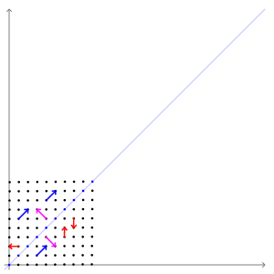
อ่านภาพนี้: เมทริกซ์แปลงเวกเตอร์ บางทิศทางคงทิศไว้และเปลี่ยนเฉพาะขนาดจำง่าย: เมทริกซ์จัดค่าตามแถวและหลัก และตัวผกผันมีเฉพาะบางเมทริกซ์
Eigenvectors.gif — Lucas Vieira · License · GIF ต้นฉบับ
สลับแถวเป็นหลัก หลักเป็นแถว
\[\begin{bmatrix}1&2\\3&4\end{bmatrix}^T=\begin{bmatrix}1&3\\2&4\end{bmatrix}\]
GIF ประกอบแนวคิด • 91 / 155 เล่น GIF
อ่านภาพนี้: สมาชิกเมทริกซ์สลับแถวกับหลักเมื่อทำทรานสโพสจำง่าย: ทรานสโพสเปลี่ยนตำแหน่งสมาชิกจาก (i,j) เป็น (j,i)
Matrix transpose.gif — Lucas Vieira · License · GIF ต้นฉบับ
det บอกตัวคูณการเปลี่ยนพื้นที่/ปริมาตรแบบมีเครื่องหมาย; rank คือจำนวนแถวหรือหลักที่อิสระเชิงเส้น
"ทำไมไม่หาสแปนเป็น เริ่มแล้วเว้ย"
\[\det\begin{bmatrix}a&b\\c&d\end{bmatrix}=ad-bc,\quad\operatorname{rank}(I_2)=2\]
GIF ประกอบแนวคิด • 92 / 155 เล่น GIF
อ่านภาพนี้: เมทริกซ์แปลงเวกเตอร์ บางทิศทางคงทิศไว้และเปลี่ยนเฉพาะขนาดจำง่าย: det บอกการเปลี่ยนพื้นที่หรือปริมาตรแบบมีเครื่องหมาย ส่วน rank นับทิศทางอิสระ
Eigenvectors.gif — Lucas Vieira · License · GIF ต้นฉบับ
ความยาว/ขนาดของเวกเตอร์
\[\|[3,4]\|_2=\sqrt{3^2+4^2}=5\]
ภาพประกอบจากเว็บ • 93 / 155
อ่านภาพนี้: การสร้างเชิงเรขาคณิตเพื่ออธิบายรากที่สองจำง่าย: นอร์มแบบยุคลิดใช้พีทาโกรัสหาความยาวเวกเตอร์
Square-root.svg — Peter John Acklam · License · ภาพต้นฉบับหรือภาพย่อจาก Wikimedia
หา x ที่ทำ f(x) มากสุด/น้อยสุด (ไม่ใช่หาค่า f สุด)
\[\operatorname*{arg\,max}_t\Pi(t)=8,\quad\max_t\Pi(t)=13320\]
GIF ประกอบแนวคิด • 94 / 155 เล่น GIF
อ่านภาพนี้: การลดค่าฟังก์ชันจากจุดเริ่มต้นต่างกัน อาจหยุดที่ค่าต่ำสุดเฉพาะที่จำง่าย: argmax คืนตำแหน่งหรือวัน ส่วน max คืนค่ากำไรสูงสุด
Gradient descent.gif — Jacopo Bertolotti · CC0 / Public domain · GIF ต้นฉบับ
อักษรกรีกที่มักแทน parameter ของโมเดล
"θ เป็น model parameter"
\[y=f(u,\theta),\quad y=\theta u\]
GIF ประกอบแนวคิด • 95 / 155 เล่น GIF
อ่านภาพนี้: เมื่อเปลี่ยนพารามิเตอร์ค่าเฉลี่ย ตำแหน่งของกราฟการกระจายจะเลื่อนจำง่าย: ธีต้าเป็นชื่อพารามิเตอร์ การเปลี่ยนค่านี้เปลี่ยนลักษณะโมเดล
Location parameter normal distribution.gif — Fschwarzentruber · CC BY-SA 4.0 · GIF ต้นฉบับ
อัตราส่วนระหว่างเส้นรอบวงกับเส้นผ่านศูนย์กลาง
\[\pi=\frac{\text{circumference}}{\text{diameter}}\approx3.14159\]
GIF ประกอบแนวคิด • 96 / 155 เล่น GIF
อ่านภาพนี้: คลี่เส้นรอบวงออกเป็นเส้นตรงเพื่อเห็นว่าความยาวเท่ากับพายคูณเส้นผ่านศูนย์กลางจำง่าย: ทุกวงกลมมีอัตราส่วนเส้นรอบวงต่อเส้นผ่านศูนย์กลางเท่ากับพาย
Pi-unrolled-720.gif — John Reid · CC BY-SA 3.0 · GIF ต้นฉบับ
ผลต่าง หรือ การเปลี่ยนแปลงเล็กน้อย
\[\Delta t=t_2-t_1,\quad\Delta y=y_2-y_1\]
GIF ประกอบแนวคิด • 97 / 155 เล่น GIF
อ่านภาพนี้: เมื่อสองจุดเข้าใกล้กัน เส้นตัดเข้าใกล้เส้นสัมผัส ความชันจึงเข้าใกล้อนุพันธ์จำง่าย: เดลต้าใหญ่หมายถึงผลต่าง; เดลต้าเล็กขึ้นกับบริบทและไม่จำเป็นต้องหมายถึงค่าที่เข้าใกล้ศูนย์เสมอ
Tangent animation.gif — Brnbrnz · CC BY-SA 4.0 · GIF ต้นฉบับ
เริ่มจากวิธีคิด → ค้นหาและเรียง → คำนวณเชิงตัวเลข → ML และกราฟ อ่านโจทย์ แล้วกด “ขั้นถัดไป” ลองทายผลก่อนเปิดเฉลย ภาพจากเว็บอาจใช้ข้อมูลคนละชุดกับตัวอย่างตัวเลขด้านล่าง
เหมือนสูตรทำอาหาร: รับสิ่งตั้งต้น ทำตามกติกาที่ชัดเจน แล้วได้ผลลัพธ์
เข้า: [2,4,6] • ออก: ผลรวม 12
\[S=\sum_{i=1}^{3}a_i=2+4+6=12\]
ลองตามตัวอย่าง เริ่ม total = 0 อ่าน 2 → total = 2 อ่าน 4 → total = 6 อ่าน 6 → total = 12 แล้วคืนผลลัพธ์ ขั้นก่อนหน้า 1 / 4 ขั้นถัดไป
ดู pseudocode — วิธีทำแบบย่อ total ← 0
for value in values:
total ← total + value
return totalจำง่าย / ระวัง: กติกาต้องชัดเจน และต้องบอกว่าเมื่อไรจบ
ลองตอบ: ถ้าเพิ่ม 3 ต่อท้าย ผลรวมเป็นเท่าไร?
เปิดเฉลย 15 เพราะ 12 + 3 = 15
เขียนวิธีคิดให้อ่านคล้ายภาษาคน ก่อนแปลงเป็นภาษาโปรแกรม
เข้า: [3,7,2] ที่ไม่ว่าง • ออก: ค่ามากสุด 7
\[\max(3,7,2)=7\]
ลองตามตัวอย่าง ตั้ง best = 3 จากสมาชิกแรก พบ 7 > 3 → เปลี่ยน best เป็น 7 พบ 2 < 7 → เก็บ best = 7 ครบรายการ → คืน 7 ขั้นก่อนหน้า 1 / 4 ขั้นถัดไป
ดู pseudocode — วิธีทำแบบย่อ best ← values[0]
for value in values[1:]:
if value > best: best ← value
return bestจำง่าย / ระวัง: รหัสเทียมไม่ผูกกับ Python หรือภาษาใดภาษาหนึ่ง
ลองตอบ: ทำไมไม่ตั้ง best = 0 เสมอ?
เปิดเฉลย ถ้าทุกค่าเป็นลบ เช่น [-5,-2] จะตอบ 0 ผิด ต้องเริ่มจากค่าจริงในรายการ
ทำกติกาเดิมหลายรอบ พร้อมตั้งเงื่อนไขหยุดและจำนวนรอบสูงสุด
เข้า: x = 8 • ออก: ค่าแรกที่ x ≤ 1
\[x_{k+1}=\frac{x_k}{2},\quad x_0=8\]
ลองตามตัวอย่าง เริ่ม x = 8 ยังมากกว่า 1 รอบ 1: x = 4 รอบ 2: x = 2 รอบ 3: x = 1 → ถึงเกณฑ์หยุด ขั้นก่อนหน้า 1 / 4 ขั้นถัดไป
ดู pseudocode — วิธีทำแบบย่อ x ← 8
repeat at most max_iter times:
if x ≤ 1: return x
x ← x / 2
if x ≤ 1: return x
report "ยังไม่ถึงเกณฑ์"จำง่าย / ระวัง: งานจริงมักใช้ tolerance วัดความคลาดเคลื่อน และ max_iter กันวนไม่จบ
ลองตอบ: ถ้าให้ทำสูงสุด 2 รอบ จะถึงเกณฑ์หรือยัง?
เปิดเฉลย ยัง: ได้ x = 2 ต้องรายงานว่ายังไม่ถึงเกณฑ์
ดูว่าเมื่อข้อมูลเพิ่ม งานคำนวณโตในอัตราใด ไม่ใช่จับเวลาเครื่องโดยตรง
เข้า: ขนาดข้อมูล n • ออก: อัตราการเติบโตของงาน
\[\log_2 n,\quad n,\quad n^2\]
ภาพ จากเว็บ
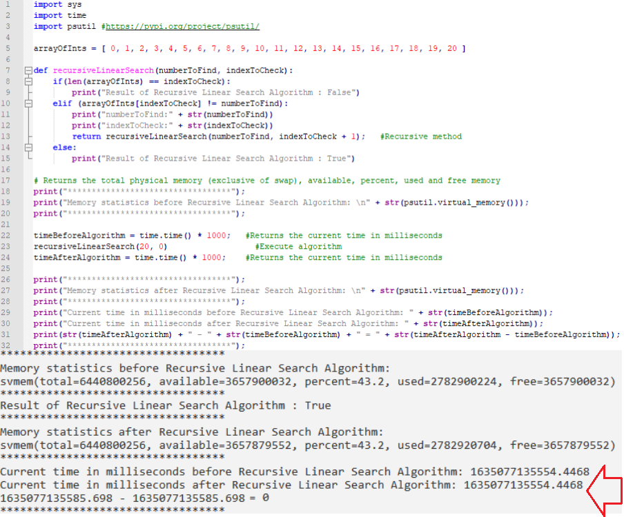
อ่านภาพนี้: ภาพเปรียบเทียบการเติบโตของเวลาเมื่อขนาดข้อมูลเปลี่ยนTime_complexity_in_practice.png — John William Stafford · License ลองตามตัวอย่าง n = 8 → log₂n = 3, n = 8, n² = 64 n = 16 → 4, 16, 256 n = 32 → 5, 32, 1,024 ตัวเลขนี้เทียบรูปแบบการเติบโต ไม่ใช่จำนวนคำสั่งจริงทุกโปรแกรม ขั้นก่อนหน้า 1 / 4 ขั้นถัดไป
ดู pseudocode — วิธีทำแบบย่อ one loop over n items → O(n)
two full nested loops → O(n²)
halve the range each round → O(log n)จำง่าย / ระวัง: Big O เป็นขอบเขตบนเชิงอัตราเติบโต; ระบุกรณี worst/average/best ให้ชัด
ลองตอบ: เพิ่ม n เป็นสองเท่า งานแบบ n² เพิ่มกี่เท่า?
เปิดเฉลย 4 เท่า เพราะ (2n)² = 4n²
เปิดดูจากต้นรายการจนพบของที่ต้องการ คล้ายไล่หาชื่อในกระดาษ
เข้า: [8,3,9,2], target = 9 • ออก: index = 2 (เริ่มนับที่ 0)
\[T_{\mathrm{worst}}(n)=O(n)\]
ลองตามตัวอย่าง index 0: 8 ≠ 9 → ไปต่อ index 1: 3 ≠ 9 → ไปต่อ index 2: 9 = 9 → พบแล้ว คืน index 2; ถ้าไล่ครบไม่พบ คืน NOT_FOUND ขั้นก่อนหน้า 1 / 4 ขั้นถัดไป
ดู pseudocode — วิธีทำแบบย่อ for i from 0 to n−1:
if values[i] = target: return i
return NOT_FOUNDจำง่าย / ระวัง: ไม่ต้องเรียงข้อมูลก่อน; ถ้าค่าซ้ำจะคืนตัวแรกในวิธีนี้
ลองตอบ: หา 2 ในรายการนี้ต้องตรวจทั้งหมดกี่ตัว?
เปิดเฉลย 4 ตัว: 8, 3, 9, 2
เปิดตรงกลาง แล้วทิ้งครึ่งที่ไม่มีคำตอบ เหมือนเปิดพจนานุกรม
เข้า: [2,4,6,8,10,12,14] เรียงจากน้อยไปมาก, target = 12 • ออก: index = 5
\[m=\left\lfloor\frac{l+r}{2}\right\rfloor,\quad T(n)=O(\log n)\]
GIF จากเว็บ เล่น GIF
อ่านภาพนี้: ตัดช่วงค้นหาครึ่งหนึ่งในแต่ละรอบ โดยข้อมูลต้องเรียงลำดับก่อนBinary-search-work.gif — Mazen Embaby · License ลองตามตัวอย่าง l = 0, r = 6 → m = 3, ค่า 8 12 > 8 → เลือกฝั่งขวา: l = 4, r = 6 m = 5, ค่า 12 → พบ คืน index 5 (นับจาก 0) ขั้นก่อนหน้า 1 / 4 ขั้นถัดไป
ดู pseudocode — วิธีทำแบบย่อ l ← 0; r ← n−1
while l ≤ r:
m ← floor((l+r)/2)
if values[m] = target: return m
if values[m] < target: l ← m+1
else: r ← m−1
return NOT_FOUNDจำง่าย / ระวัง: สูตรเวลานี้สมมติว่าเข้าถึงสมาชิกตาม index ได้รวดเร็ว
ลองตอบ: ใช้กับ [8,2,12,4] ทันทีได้ไหม?
เปิดเฉลย ไม่ได้ ต้องเรียงข้อมูลก่อนจึงตัดครึ่งได้อย่างถูกต้อง
ค่าที่ใหญ่ค่อย ๆ ลอยไปท้ายรายการ เหมือนฟองอากาศ
เข้า: [5,1,4,2] • ออก: [1,2,4,5]
\[T_{\mathrm{worst}}(n)=O(n^2)\]
GIF จากเว็บ เล่น GIF
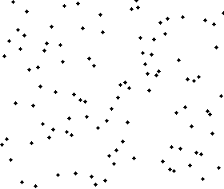
อ่านภาพนี้: เปรียบเทียบค่าที่อยู่ติดกันและสลับเมื่อเรียงผิด จนค่ามากค่อย ๆ ไปท้ายรายการBubble_sort_animation.gif — The original uploader was Nmnogueira at English Wikipedia . · License ลองตามตัวอย่าง เปรียบเทียบ 5 กับ 1 → [1,5,4,2] เปรียบเทียบ 5 กับ 4 → [1,4,5,2] เปรียบเทียบ 5 กับ 2 → [1,4,2,5] จบรอบแรก รอบถัดไปสลับ 4 กับ 2 → [1,2,4,5]; รอบที่ไม่สลับจึงหยุด ขั้นก่อนหน้า 1 / 4 ขั้นถัดไป
ดู pseudocode — วิธีทำแบบย่อ for end from n−1 down to 1:
swapped ← false
for i from 0 to end−1:
if values[i] > values[i+1]:
swap(values[i], values[i+1])
swapped ← true
if not swapped: breakจำง่าย / ระวัง: เข้าใจง่าย แต่ช้ากว่าวิธีอื่นมากเมื่อรายการใหญ่
ลองตอบ: จบรอบแรก ค่าใดไปอยู่ท้ายสุด?
เปิดเฉลย 5 ซึ่งเป็นค่ามากสุด
แบ่งกองใหญ่เป็นกองเล็ก เรียงกองเล็ก แล้วหยิบค่าน้อยสุดมารวม
เข้า: [5,1,4,2] • ออก: [1,2,4,5]
\[T(n)=O(n\log n)\]
GIF จากเว็บ เล่น GIF
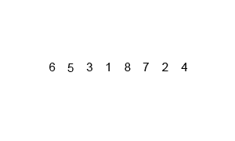
อ่านภาพนี้: แบ่งรายการเป็นส่วนเล็ก แล้วผสานส่วนที่เรียงแล้วกลับเข้าด้วยกันMerge-sort-example-300px.gif — Swfung8 · License ลองตามตัวอย่าง แบ่ง → [5,1] และ [4,2] แบ่งต่อจนเหลือรายการละ 1 ค่า ผสานคู่ → [1,5] และ [2,4] ผสานจากหัวกองที่เล็กกว่า → [1,2,4,5] ขั้นก่อนหน้า 1 / 4 ขั้นถัดไป
ดู pseudocode — วิธีทำแบบย่อ merge_sort(values):
if length(values) ≤ 1: return values
left, right ← split in half
return merge(merge_sort(left), merge_sort(right))
# merge: หยิบหัวที่เล็กกว่า แล้วต่อส่วนที่เหลือจำง่าย / ระวัง: เวอร์ชันมาตรฐานใช้พื้นที่เสริม O(n) สำหรับผสาน
ลองตอบ: เมื่อผสาน [1,5] กับ [2,4] ต้องหยิบอะไรก่อน?
เปิดเฉลย 1 จากกองซ้าย แล้วจึง 2, 4 และ 5
แก้ปัญหาใหญ่ด้วยปัญหารูปเดิมที่เล็กลง จนถึงกรณีฐาน
เข้า: จำนวนเต็ม n ≥ 0 • ออก: n!
\[n!=n(n-1)!,\quad 0!=1\]
ลองตามตัวอย่าง ต้องการ 4! → รอ 4 × 3! 3! → รอ 3 × 2!; 2! → รอ 2 × 1! ถึง 0! = 1 แล้วคืนค่ากลับขึ้นมา 1! = 1, 2! = 2, 3! = 6, 4! = 24 ขั้นก่อนหน้า 1 / 4 ขั้นถัดไป
ดู pseudocode — วิธีทำแบบย่อ factorial(n):
if n = 0: return 1
return n × factorial(n−1)จำง่าย / ระวัง: ต้องมีกรณีฐาน และแต่ละรอบต้องเข้าใกล้กรณีฐาน
ลองตอบ: ถ้าไม่มีกรณีฐาน จะเกิดอะไร?
เปิดเฉลย เรียกตัวเองต่อจนผิดเงื่อนไขหรือ stack เต็ม
รู้ว่ารากอยู่ระหว่างสองฝั่ง แล้วบีบช่วงให้เล็กลง
เข้า: f(x)=x²−2 ต่อเนื่องบน [1,2], ค่าปลายต่างเครื่องหมาย • ออก: รากประมาณ √2
\[m=\frac{a+b}{2},\quad f(a)f(b)<0\]
GIF จากเว็บ เล่น GIF
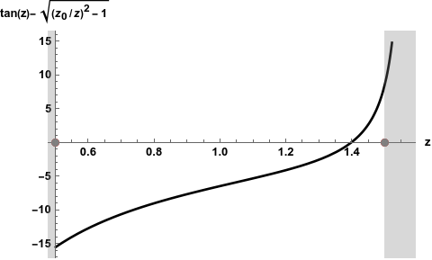
อ่านภาพนี้: ช่วงที่คร่อมรากถูกแบ่งครึ่งซ้ำ ๆ แล้วเลือกฝั่งที่ยังมีค่าฟังก์ชันต่างเครื่องหมายBisection_method.gif — Clodovendro · License ลองตามตัวอย่าง [1,2] → m = 1.5, f(m) = 0.25 → เก็บ [1,1.5] m = 1.25, f(m) = −0.4375 → เก็บ [1.25,1.5] m = 1.375, f(m) = −0.109375 → เก็บ [1.375,1.5] แบ่งต่อจนความกว้างครึ่งช่วง ≤ tolerance แล้วคืนจุดกลาง ขั้นก่อนหน้า 1 / 4 ขั้นถัดไป
ดู pseudocode — วิธีทำแบบย่อ check continuity and endpoint signs
if f(a)=0: return a
if f(b)=0: return b
repeat at most max_iter times:
m ← (a+b)/2
if f(m)=0 or (b−a)/2 ≤ tolerance: return m
if f(a)×f(m)<0: b ← m
else: a ← m
report "ยังไม่ถึงเกณฑ์"จำง่าย / ระวัง: ต้องตรวจเงื่อนไขเริ่มต้น; ต่างเครื่องหมายอย่างเดียวไม่พอถ้าฟังก์ชันไม่ต่อเนื่อง
ลองตอบ: หลังรอบแรก ทำไมไม่เก็บ [1.5,2]?
เปิดเฉลย ค่าฟังก์ชันปลายทั้งสองเป็นบวก จึงไม่คร่อมราก √2
ลากเส้นสัมผัสจากจุดปัจจุบัน ไปใช้จุดตัดแกนเป็นคำเดาใหม่
เข้า: f(x)=x²−2, f′(x)=2x, x₀=1 • ออก: รากประมาณ √2
\[x_{k+1}=x_k-\frac{f(x_k)}{f^{\prime}(x_k)}\]
GIF จากเว็บ เล่น GIF
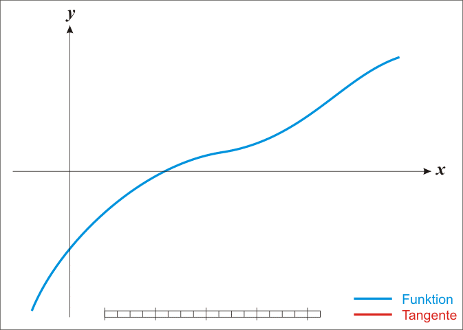
อ่านภาพนี้: เส้นสัมผัสที่ค่าประมาณปัจจุบันตัดแกน x เป็นค่าประมาณรอบถัดไปNewtonIteration_Ani.gif — Ralf Pfeifer · License ลองตามตัวอย่าง x₀ = 1 → x₁ = 1 − (−1)/2 = 1.5 x₂ = 1.5 − 0.25/3 ≈ 1.416667 x₃ ≈ 1.414216 ตรวจ |f(x)| เล็กพอ ก่อนรายงานว่าถึงเกณฑ์ ขั้นก่อนหน้า 1 / 4 ขั้นถัดไป
ดู pseudocode — วิธีทำแบบย่อ repeat at most max_iter times:
if abs(f(x)) ≤ tolerance: return x
if abs(derivative(x)) < tiny: report failure
x ← x − f(x)/derivative(x)
if abs(f(x)) ≤ tolerance: return x
report "ยังไม่ถึงเกณฑ์"จำง่าย / ระวัง: อาจไม่ลู่เข้าถ้าเลือกจุดเริ่มไม่ดี และอนุพันธ์ใกล้ศูนย์ทำให้ก้าวใหญ่
ลองตอบ: ถ้า x₀ = 0 ในตัวอย่างนี้จะติดปัญหาอะไร?
เปิดเฉลย f′(0) = 0 ทำให้หารด้วยศูนย์
ประมาณคำตอบ ODE ด้วยก้าวสั้น ๆ โดยใช้ความชันต้นก้าว
เข้า: y′=−y, y(0)=1, h=0.1 • ออก: ค่า y ในเวลาต่าง ๆ
\[y_{k+1}=y_k+h f(t_k,y_k)\]
ภาพ จากเว็บ
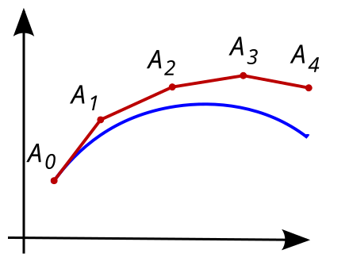
อ่านภาพนี้: เดินทีละช่วงเวลาโดยใช้ความชันที่ต้นช่วง เส้นประมาณจึงอาจต่างจากคำตอบจริงEuler_method.svg — See source for creator credits · License ลองตามตัวอย่าง t = 0, y = 1 → ความชัน −1 t = 0.1 → y = 1 + 0.1(−1) = 0.9 t = 0.2 → y = 0.9 + 0.1(−0.9) = 0.81 t = 0.3 → y = 0.729; ค่าจริง e⁻⁰·³ ≈ 0.740818 ขั้นก่อนหน้า 1 / 4 ขั้นถัดไป
ดู pseudocode — วิธีทำแบบย่อ repeat for each time step:
y_next ← y + h×f(t,y)
t ← t+h
y ← y_nextจำง่าย / ระวัง: ก้าวที่ใหญ่เกินไปอาจทำให้ไม่เสถียร แม้คำตอบจริงไม่ระเบิด
ลองตอบ: ลดขนาดก้าว h โดยทั่วไปช่วยเรื่องใด?
เปิดเฉลย ช่วยลดความคลาดเคลื่อน แต่ต้องคำนวณจำนวนก้าวมากขึ้น
ชั่งน้ำหนักความชันต้นก้าว กลางก้าว และปลายก้าว
เข้า: y′=−y, y=1, h=0.1 • ออก: y(0.1) ≈ 0.9048375
\[\begin{aligned}k_1&=f(t,y)\\k_2&=f(t+h/2,y+hk_1/2)\\k_3&=f(t+h/2,y+hk_2/2)\\k_4&=f(t+h,y+hk_3)\\y_{\mathrm{next}}&=y+\frac h6(k_1+2k_2+2k_3+k_4)\end{aligned}\]
ภาพ จากเว็บ
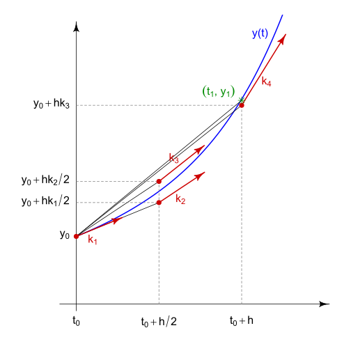
อ่านภาพนี้: RK4 ใช้ความชันสี่ค่าภายในหนึ่งก้าว แล้วนำมาถ่วงน้ำหนักRunge-Kutta_slopes.svg — HilberTraum · License ลองตามตัวอย่าง ต้นก้าว: k₁ = −1 กลางก้าวครั้งแรก: k₂ = −0.95 กลางก้าวครั้งที่สอง: k₃ = −0.9525; ปลายก้าว k₄ = −0.90475 รวมถ่วงน้ำหนัก → y ใหม่ = 0.9048375 (ค่าจริง ≈ 0.904837418) ขั้นก่อนหน้า 1 / 4 ขั้นถัดไป
ดู pseudocode — วิธีทำแบบย่อ compute k1, k2, k3, k4 from the formulas
y ← y + h×(k1+2k2+2k3+k4)/6
t ← t+hจำง่าย / ระวัง: แม่นกว่า Euler ในหลายปัญหาที่ราบเรียบ แต่ยังเป็นค่าประมาณและต้องเลือก h ให้เหมาะ
ลองตอบ: RK4 ประเมิน f กี่ครั้งต่อก้าว?
เปิดเฉลย 4 ครั้ง
ปรับตัวแปรไปทิศตรงข้ามกับ gradient เพื่อให้ฟังก์ชันเล็กลง
เข้า: f(x)=(x−3)², x₀=0, η=0.1 • ออก: x เข้าใกล้ 3
\[x_{k+1}=x_k-\eta f^{\prime}(x_k),\quad f^{\prime}(x)=2(x-3)\]
ลองตามตัวอย่าง x = 0, gradient = −6 → x ใหม่ = 0.6 x = 0.6, gradient = −4.8 → x ใหม่ = 1.08 x = 1.08, gradient = −3.84 → x ใหม่ = 1.464 ทำต่อ → เข้าใกล้ x = 3 ซึ่ง f = 0 ขั้นก่อนหน้า 1 / 4 ขั้นถัดไป
ดู pseudocode — วิธีทำแบบย่อ repeat at most max_iter times:
g ← gradient(f,x)
if norm(g) ≤ tolerance: return x
x ← x − learning_rate×g
report current estimate and statusจำง่าย / ระวัง: learning rate ใหญ่เกินไปอาจแกว่งหรือไม่ลู่เข้า; backpropagation เป็นวิธีหา gradient อีกส่วนหนึ่ง
ลองตอบ: ทำไม gradient ติดลบแล้ว x จึงเพิ่ม?
เปิดเฉลย เพราะลบค่าติดลบ: x − η(−|g|) = x + η|g|
จัดสมการให้เป็นขั้นบันได แล้วแทนค่ากลับจากล่างขึ้นบน
เข้า: 2x+y=5 และ x−y=1 • ออก: x=2, y=1
\[\begin{bmatrix}2&1&5\\1&-1&1\end{bmatrix}\ \xrightarrow{R_2-\frac12R_1}\ \begin{bmatrix}2&1&5\\0&-1.5&-1.5\end{bmatrix}\]
GIF จากเว็บ เล่น GIF
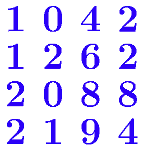
อ่านภาพนี้: ใช้การดำเนินการกับแถวเพื่อกำจัดตัวแปร แล้วแก้ย้อนกลับGaussian_elimination_animated.gif — Jirka Fiala · License ลองตามตัวอย่าง เขียนสมการเป็นเมทริกซ์เสริม กำจัด x ในแถวสอง: R₂ ← R₂ − 0.5R₁ แถวสองเหลือ −1.5y = −1.5 → y = 1 แทนกลับ 2x + 1 = 5 → x = 2 ขั้นก่อนหน้า 1 / 4 ขั้นถัดไป
ดู pseudocode — วิธีทำแบบย่อ for each pivot column:
choose nonzero pivot (swap rows if needed)
eliminate entries below pivot
check inconsistent / nonunique cases
back-substitute when solution is uniqueจำง่าย / ระวัง: บางระบบไม่มีคำตอบหรือมีหลายคำตอบ; อย่าหารด้วย pivot ศูนย์
ลองตอบ: ถ้า pivot เป็นศูนย์ ต้องทำอย่างไร?
เปิดเฉลย หาค่าที่ไม่เป็นศูนย์ในแถวด้านล่างแล้วสลับแถว ถ้าไม่มีต้องตรวจ rank ต่อ
ให้แต่ละจุดเข้ากลุ่มที่ศูนย์กลางใกล้ที่สุด แล้วหาเฉลี่ยใหม่
เข้า: [1,2,8,9], K=2, ศูนย์กลางเริ่ม 1 และ 8 • ออก: สองกลุ่ม
\[\mu_j=\frac{1}{|C_j|}\sum_{x\in C_j}x\]
GIF จากเว็บ เล่น GIF
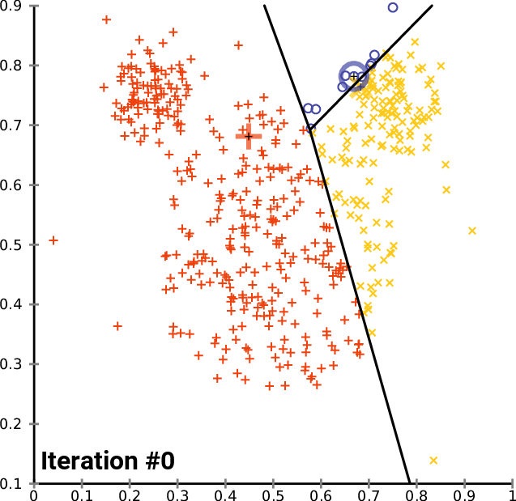
อ่านภาพนี้: สลับการจัดจุดเข้ากลุ่มที่ใกล้ที่สุดกับการย้ายจุดศูนย์กลางไปที่ค่าเฉลี่ยK-means_convergence.gif — Chire · License ลองตามตัวอย่าง ศูนย์กลางเริ่ม = 1 และ 8 จัดกลุ่มใกล้สุด → C₁={1,2}, C₂={8,9} หาเฉลี่ย → μ₁=1.5, μ₂=8.5 จัดกลุ่มอีกครั้งยังเหมือนเดิม → หยุด ขั้นก่อนหน้า 1 / 4 ขั้นถัดไป
ดู pseudocode — วิธีทำแบบย่อ initialize K centers
repeat until convergence or max_iter:
assign each point to nearest center
update each center to mean of its points
handle empty clusters if any
return groups and centersจำง่าย / ระวัง: เป็น unsupervised learning; จุดเริ่มและสเกลข้อมูลมีผล อาจได้ค่าต่ำสุดเฉพาะที่
ลองตอบ: K=2 หมายถึงอะไร?
เปิดเฉลย ต้องการ 2 กลุ่ม ไม่ใช่ดูเพื่อนบ้าน 2 คน
ทำนายป้ายกำกับจากเสียงส่วนใหญ่ของตัวอย่างใกล้เคียง
เข้า: จุดใหม่ x=4; จุด 3(A),5(A),6(B); k=3 • ออก: A
\[d(x,z)=|x-z|,\quad\widehat y=\operatorname{mode}(y_{(1)},\ldots,y_{(k)})\]
ภาพ จากเว็บ
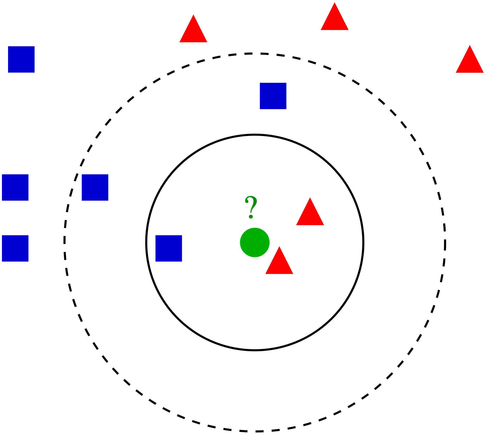
อ่านภาพนี้: จำแนกจุดใหม่จากเพื่อนบ้านที่อยู่ใกล้ โดยผลอาจเปลี่ยนเมื่อเลือก k ต่างกันKnnClassification.svg — Natana Jadri AnAj · License ลองตามตัวอย่าง ระยะจาก 4 ถึง 3(A) = 1 ถึง 5(A) = 1; ถึง 6(B) = 2 เลือกทั้ง 3 จุด → A สองเสียง, B หนึ่งเสียง เสียงข้างมาก → ทำนาย A ขั้นก่อนหน้า 1 / 4 ขั้นถัดไป
ดู pseudocode — วิธีทำแบบย่อ compute distances to labeled examples
choose k nearest examples
return majority label
# define a tie rule when votes are equalจำง่าย / ระวัง: กำหนด k และกติกาเสมอให้ชัด; ควรปรับสเกลเมื่อหลายคุณลักษณะใช้หน่วยต่างกัน
ลองตอบ: kNN ต่างจาก K-Means ตรงไหน?
เปิดเฉลย kNN ใช้ข้อมูลที่มีป้ายกำกับเพื่อทำนาย; K-Means แบ่งกลุ่มโดยไม่มีป้ายกำกับ
ใช้คิว: คนเข้าก่อนออกก่อน จึงไปโหนดใกล้จุดเริ่มก่อน
เข้า: A–B, A–C, B–D, C–E; เริ่ม A • ออก: A,B,C,D,E
\[\text{queue: FIFO},\quad T=O(V+E)\]
GIF จากเว็บ เล่น GIF
อ่านภาพนี้: เยี่ยมจุดใกล้จุดเริ่มก่อน แล้วขยายไปยังชั้นถัดไปBreadth-First-Search-Algorithm.gif — Mre · License ลองตามตัวอย่าง คิว [A] → เยี่ยม A แล้วใส่ B,C คิว [B,C] → เยี่ยม B แล้วใส่ D → [C,D] เยี่ยม C แล้วใส่ E → [D,E] เยี่ยม D,E → ลำดับ A,B,C,D,E ขั้นก่อนหน้า 1 / 4 ขั้นถัดไป
ดู pseudocode — วิธีทำแบบย่อ queue ← [start]; seen ← {start}
while queue is not empty:
u ← pop_front(queue); visit(u)
for neighbor v in alphabetical order:
if v not in seen:
add v to seen; push_back(queue,v)จำง่าย / ระวัง: ลำดับขึ้นกับลำดับเพื่อนบ้าน; BFS หาทางสั้นสุดในกราฟที่ไม่มีน้ำหนักหรือทุกขอบน้ำหนักเท่ากัน
ลองตอบ: ในตัวอย่างนี้ เยี่ยม C หรือ D ก่อน?
เปิดเฉลย C เพราะอยู่ชั้นแรกเหมือน B ส่วน D อยู่ชั้นถัดไป
ไปทางหนึ่งให้สุดก่อน แล้วค่อยกลับมาลองทางอื่น
เข้า: กราฟเดียวกับ BFS, เริ่ม A • ออก: A,B,D,C,E
\[\text{stack: LIFO},\quad T=O(V+E)\]
GIF จากเว็บ เล่น GIF
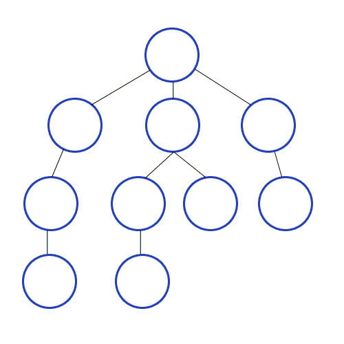
อ่านภาพนี้: สำรวจเส้นทางหนึ่งลงลึกก่อน แล้วย้อนกลับมาสำรวจเส้นทางที่เหลือDepth-First-Search.gif — Mre · License ลองตามตัวอย่าง เยี่ยม A → ไป B ก่อน C จาก B → ไป D; D ไม่มีเพื่อนใหม่ ย้อนกลับ B แล้ว A → ไป C จาก C → ไป E; ลำดับ A,B,D,C,E ขั้นก่อนหน้า 1 / 4 ขั้นถัดไป
ดู pseudocode — วิธีทำแบบย่อ dfs(u):
mark u seen; visit(u)
for neighbor v in alphabetical order:
if v not seen: dfs(v)จำง่าย / ระวัง: ใช้ recursion หรือ stack ได้; DFS ไม่รับประกันทางสั้นสุด
ลองตอบ: ทำไมต้องมี seen?
เปิดเฉลย ป้องกันเยี่ยมซ้ำและวนไม่จบเมื่อกราฟมีวงจร
เลือกโหนดที่มีระยะสะสมต่ำสุด แล้วปรับระยะเพื่อนบ้าน
เข้า: A–B:1, A–C:4, B–C:2, B–D:5, C–D:1 • ออก: A→B→C→D ระยะ 4
\[d(v)\leftarrow\min\{d(v),d(u)+w(u,v)\}\]
GIF จากเว็บ เล่น GIF
อ่านภาพนี้: เลือกจุดที่มีระยะชั่วคราวน้อยที่สุด แล้วปรับระยะผ่านจุดนั้นDijkstra_Animation.gif — Ibmua · License ลองตามตัวอย่าง ตั้ง d(A)=0, ที่เหลือ = ∞; จาก A ได้ B=1, C=4 เลือก B ระยะ 1 → ปรับ C=3, D=6 เลือก C ระยะ 3 → ปรับ D=4 เลือก D ระยะ 4 → ย้อน predecessor ได้ A→B→C→D ขั้นก่อนหน้า 1 / 4 ขั้นถัดไป
ดู pseudocode — วิธีทำแบบย่อ dist[start] ← 0; others ← infinity
priority_queue ← [(0,start)]
while queue not empty:
d,u ← pop smallest distance
if d ≠ dist[u]: continue
for edge u→v with weight w:
if d+w < dist[v]:
dist[v] ← d+w; parent[v] ← u
push(dist[v],v)
return distances and parentsจำง่าย / ระวัง: กราฟตัวอย่างเป็นขอบสองทาง; ต้องระบุทิศทางและหน่วยน้ำหนักในงานจริง
ลองตอบ: ถ้าขอบบางเส้นน้ำหนักติดลบ ใช้วิธีนี้ตรง ๆ ได้ไหม?
เปิดเฉลย ไม่ได้ Dijkstra ต้องใช้ขอบน้ำหนักไม่ติดลบ